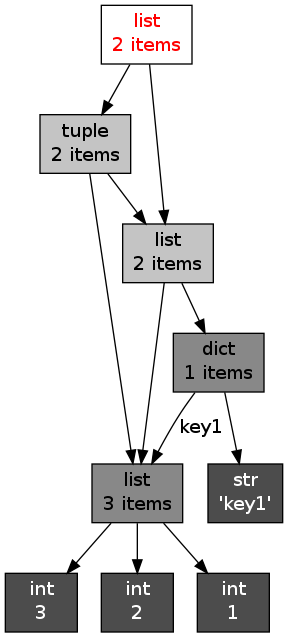
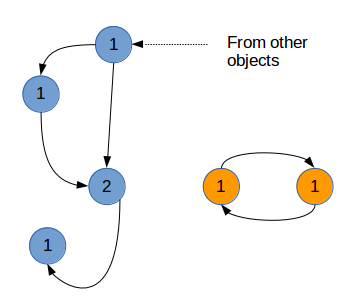
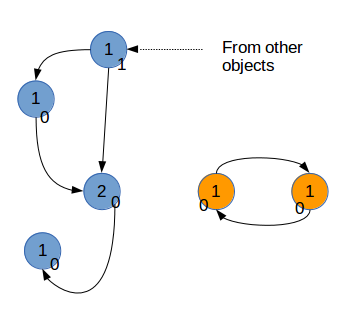
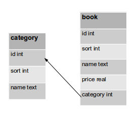

Python 学习指南
Python 快速教程
作者：Vamei
Python包含的内容很多，加上各种标准库、拓展库，乱花渐欲迷人眼。我一直希望写一个快速的、容易上手的Python教程，而且言语简洁，循序渐进，让没有背景的读者也可以从基础开始学习。我将在每一篇中专注于一个小的概念，希望在闲暇时可以很快读完。
小提醒
- 教程将专注于Python基础，语法基于Python 2.7 (我会提醒Python 3.x中有变化的地方，以方便读者适应3.X的情况)。测试环境为Linux。标准库的一些包不适用于Windows平台。如果文中的程序无法在你的平台上运行，欢迎讨论。
- 我将专注于Python的主干，以便读者能以最快时间对Python形成概念。
- Linux命令行将以\(开始，比如 \)ls, $python
- Python命令行将以>>>开始，比如 >>>print 'Hello World!'
- 注释会以#开始
建议
- 将教程中的命令敲到Python中看看效果。
- 看过教程之后，可以进行一些练习。
Python基础01 Hello World!
Python命令行
假设你已经安装好了Python, 那么在Linux命令行输入:
$python
将直接进入python。然后在命令行提示符>>>后面输入:
>>>print('Hello World!')
可以看到，随后在屏幕上输出:
Hello World!
print是一个常用函数，其功能就是输出括号中得字符串。
（在Python 2.x中，print还可以是一个关键字，可写成print 'Hello World!'，但这在3.x中行不通 ）
写一段小程序
另一个使用Python的方法，是写一个Python程序。用文本编辑器写一个.py结尾的文件，比如说hello.py
在hello.py中写入如下，并保存:
print('Hello World!')
退出文本编辑器，然后在命令行输入:
$python hello.py
来运行hello.py。可以看到Python随后输出
Hello World!
脚本
我们还可以把Python程序hello.py改成一个可执行的脚本，直接执行：
#!/usr/bin/env python
print('Hello World!')
需要修改上面程序的权限为可执行：
chmod 755 hello.py
然后再命令行中，输入
./hello.py
就可以直接运行了
总结
print
命令行模式: 运行Python，在命令行输入命令并执行。
程序模式: 写一段Python程序并运行。
Python基础02 基本数据类型
简单的数据类型以及赋值
变量不需要声明
Python的变量不需要声明，你可以直接输入：
>>>a = 10
那么你的内存里就有了一个变量a， 它的值是10，它的类型是integer (整数)。 在此之前你不需要做什么特别的声明，而数据类型是Python自动决定的。
>>>print a
>>>print type(a)
那么会有如下输出：
10
<type 'int'>
这里，我们学到一个内置函数type(), 用以查询变量的类型。
回收变量名
如果你想让a存储不同的数据，你不需要删除原有变量就可以直接赋值。
>>>a = 1.3
>>>print a,type(a)
会有如下输出
1.3 <type 'float'>
我们看到print的另一个用法，也就是print后跟多个输出，以逗号分隔。
基本数据类型
a=10 # int 整数
a=1.3 # float 浮点数
a=True # 真值 (True/False)
a='Hello!' # 字符串
以上是最常用的数据类型，对于字符串来说，也可以用双引号。
（此外还有分数，字符，复数等其他数据类型，有兴趣的可以学习一下）
总结
变量不需要声明，不需要删除，可以直接回收适用。
type(): 查询数据类型
整数，浮点数，真值，字符串
Python基础03 序列
sequence 序列
sequence(序列)是一组有顺序的元素的集合
(严格的说，是对象的集合，但鉴于我们还没有引入“对象”概念，暂时说元素)
序列可以包含一个或多个元素，也可以没有任何元素。
我们之前所说的基本数据类型，都可以作为序列的元素。元素还可以是另一个序列，以及我们以后要介绍的其他对象。
序列有两种：tuple（定值表； 也有翻译为元组） 和 list (表)
>>>s1 = (2, 1.3, 'love', 5.6, 9, 12, False) # s1是一个tuple
>>>s2 = [True, 5, 'smile'] # s2是一个list
>>>print s1,type(s1)
>>>print s2,type(s2)
tuple和list的主要区别在于，一旦建立，tuple的各个元素不可再变更，而list的各个元素可以再变更。
一个序列作为另一个序列的元素
>>>s3 = [1,[3,4,5]]
空序列
>>>s4 = []
元素的引用
序列元素的下标从0开始：
>>>print s1[0]
>>>print s2[2]
>>>print s3[1][2]
由于list的元素可变更，你可以对list的某个元素赋值：
>>>s2[1] = 3.0
>>>print s2
如果你对tuple做这样的操作，会得到错误提示。
所以，可以看到，序列的引用通过s[
其他引用方式
范围引用： 基本样式[下限:上限:步长]
>>>print s1[:5] # 从开始到下标4 （下标5的元素 不包括在内）
>>>print s1[2:] # 从下标2到最后
>>>print s1[0:5:2] # 从下标0到下标4 (下标5不包括在内)，每隔2取一个元素 （下标为0，2，4的元素）
>>>print s1[2:0:-1] # 从下标2到下标1
从上面可以看到，在范围引用的时候，如果写明上限，那么这个上限本身不包括在内。
尾部元素引用
>>>print s1[-1] # 序列最后一个元素
>>>print s1[-3] # 序列倒数第三个元素
同样，如果s1[0:-1], 那么最后一个元素不会被引用 （再一次，不包括上限元素本身）
字符串是元组
字符串是一种特殊的元素，因此可以执行元组的相关操作。
>>>str = 'abcdef'
>>>print str[2:4]
总结
tuple元素不可变，list元素可变
序列的引用 s[2], s[1:8:2]
字符串是一种tuple
Python基础04 运算
Python的运算符和其他语言类似
（我们暂时只了解这些运算符的基本用法，方便我们展开后面的内容，高级应用暂时不介绍）
数学运算
>>>print 1+9 # 加法
>>>print 1.3-4 # 减法
>>>print 3*5 # 乘法
>>>print 4.5/1.5 # 除法
>>>print 3**2 # 乘方
>>>print 10%3 # 求余数
判断
判断是真还是假，返回True/False
>>>print 5==6 # =， 相等
>>>print 8.0!=8.0 # !=, 不等
>>>print 3<3, 3<=3 # <, 小于; <=, 小于等于
>>>print 4>5, 4>=0 # >, 大于; >=, 大于等于
>>>print 5 in [1,3,5] # 5是list [1,3,5]的一个元素
（还有is, is not等, 暂时不深入）
逻辑运算
True/False之间的运算
>>>print True and True, True and False # and, “与”运算， 两者都为真才是真
>>>print True or False # or, "或"运算， 其中之一为真即为真
>>>print not True # not, “非”运算， 取反
可以和上一部分结合做一些练习，比如：
>>>print 5==6 or 3>=3
总结
数学 +, -, *, /, **, %
判断 ==, !=, >, >=, <, <=, in
逻辑 and, or, not
Python基础05 缩进和选择
缩进
Python最具特色的是用缩进来标明成块的代码。我下面以if选择结构来举例。if后面跟随条件，如果条件成立，则执行归属于if的一个代码块。
先看C语言的表达方式（注意，这是C，不是Python!）
if ( i > 0 )
{
x = 1;
y = 2;
}
如果i > 0的话，我们将进行括号中所包括的两个赋值操作。括号中包含的就是块操作，它隶属于if。
在Python中，同样的目的，这段话是这样的
if i > 0:
x = 1
y = 2
在Python中， 去掉了i > 0周围的括号，去除了每个语句句尾的分号，表示块的花括号也消失了。
多出来了if ...之后的:(冒号), 还有就是x = 1 和 y =2前面有四个空格的缩进。通过缩进，Python识别出这两个语句是隶属于if。
Python这样设计的理由纯粹是为了程序好看。
if语句
写一个完整的程序，命名为ifDemo.py。这个程序用于实现if结构。
i = 1
x = 1
if i > 0:
x = x+1
print x
$python ifDemo.py # 运行
程序运行到if的时候，条件为True，因此执行x = x+1,。
print x 语句没有缩进，那么就是if之外。
如果将第一句改成i = -1，那么if遇到假值 (False), x = x+1隶属于if, 这一句跳过。 print x没有缩进，是if之外，不跳过，继续执行。
这种以四个空格的缩进来表示隶属关系的书写方式，以后还会看到。强制缩进增强了程序的可读性。
复杂一些的if选择：
i = 1
if i > 0:
print 'positive i'
i = i + 1
elif i == 0:
print 'i is 0'
i = i * 10
else:
print 'negative i'
i = i - 1
print 'new i:',i
这里有三个块，分别属于if, elif, else引领。
Python检测条件，如果发现if的条件为假，那么跳过后面紧跟的块，检测下一个elif的条件； 如果还是假，那么执行else块。
通过上面的结构将程序分出三个分支。程序根据条件，只执行三个分支中的一个。
整个if可以放在另一个if语句中，也就是if结构的嵌套使用：
i = 5
if i > 1:
print 'i bigger than 1'
print 'good'
if i > 2:
print 'i bigger than 2'
print 'even better'
if i > 2 后面的块相对于该if缩进了四个空格，以表明其隶属于该if，而不是外层的if。
总结
if语句之后的冒号
以四个空格的缩进来表示隶属关系, Python中不能随意缩进
if <条件1>:
statement
elif <条件2>:
statement
elif <条件3>：
statement
else:
statement
Python基础06 循环
循环用于重复执行一些程序块。从上一讲的选择结构，我们已经看到了如何用缩进来表示程序块的隶属关系。循环也会用到类似的写法。
for循环
for循环需要预先设定好循环的次数(n)，然后执行隶属于for的语句n次。
基本构造是
for 元素 in 序列:
statement
举例来说，我们编辑一个叫forDemo.py的文件
for a in [3,4.4,'life']:
print a
这个循环就是每次从表[3,4.4,'life'] 中取出一个元素（回忆：表是一种序列），然后将这个元素赋值给a，之后执行隶属于for的操作(print)。
介绍一个新的Python函数range()，来帮助你建立表。
idx = range(5)
print idx
可以看到idx是[0,1,2,3,4]
这个函数的功能是新建一个表。这个表的元素都是整数，从0开始，下一个元素比前一个大1， 直到函数中所写的上限 （不包括该上限本身）
(关于range()，还有丰富用法，有兴趣可以查阅， Python 3中， range()用法有变化，见评论区)
举例
for a in range(10):
print a**2
while循环
while的用法是
while 条件:
statement
while会不停地循环执行隶属于它的语句，直到条件为假(False)
举例
while i < 10:
print i
i = i + 1
中断循环
continue # 在循环的某一次执行中，如果遇到continue, 那么跳过这一次执行，进行下一次的操作
break # 停止执行整个循环
for i in range(10):
if i == 2:
continue
print i
当循环执行到i = 2的时候，if条件成立，触发continue, 跳过本次执行(不执行print)，继续进行下一次执行(i = 3)。
for i in range(10):
if i == 2:
break
print i
当循环执行到i = 2的时候，if条件成立，触发break, 整个循环停止。
总结
- range()
- for 元素 in 序列:
- while 条件:
- continue
- break
Python基础07 函数
函数最重要的目的是方便我们重复使用相同的一段程序。
将一些操作隶属于一个函数，以后你想实现相同的操作的时候，只用调用函数名就可以，而不需要重复敲所有的语句。
函数的定义
首先，我们要定义一个函数, 以说明这个函数的功能。
def square_sum(a,b):
c = a**2 + b**2
return c
这个函数的功能是求两个数的平方和。
首先，def，这个关键字通知python：我在定义一个函数。square_sum是函数名。
括号中的a, b是函数的参数，是对函数的输入。参数可以有多个，也可以完全没有（但括号要保留）。
我们已经在循环和选择中见过冒号和缩进来表示的隶属关系。
c = a**2 + b**2 # 这一句是函数内部进行的运算
return c # 返回c的值，也就是输出的功能。Python的函数允许不返回值，也就是不用return。
return可以返回多个值，以逗号分隔。相当于返回一个tuple(定值表)。
return a,b,c # 相当于 return (a,b,c)
在Python中，当程序执行到return的时候，程序将停止执行函数内余下的语句。return并不是必须的，当没有return, 或者return后面没有返回值时，函数将自动返回None。None是Python中的一个特别的数据类型，用来表示什么都没有，相当于C中的NULL。None多用于关键字参数传递的默认值。
函数调用和参数传递
定义过函数后，就可以在后面程序中使用这一函数
print square_sum(3,4)
Python通过位置，知道3对应的是函数定义中的第一个参数a， 4对应第二个参数b，然后把参数传递给函数square_sum。
（Python有丰富的参数传递方式，还有关键字传递、表传递、字典传递等，基础教程将只涉及位置传递）
函数经过运算，返回值25, 这个25被print打印出来。
我们再看下面两个例子
a = 1
def change_integer(a):
a = a + 1
return a
print change_integer(a)
print a
#===(Python中 "#" 后面跟的内容是注释，不执行 )
b = [1,2,3]
def change_list(b):
b[0] = b[0] + 1
return b
print change_list(b)
print b
第一个例子，我们将一个整数变量传递给函数，函数对它进行操作，但原整数变量a不发生变化。
第二个例子，我们将一个表传递给函数，函数进行操作，原来的表b发生变化。
对于基本数据类型的变量，变量传递给函数后，函数会在内存中复制一个新的变量，从而不影响原来的变量。（我们称此为值传递）
但是对于表来说，表传递给函数的是一个指针，指针指向序列在内存中的位置，在函数中对表的操作将在原有内存中进行，从而影响原有变量。 （我们称此为指针传递）
总结
def function_name(a,b,c):
statement
return something # return不是必须的
- 函数的目的： 提高程序的重复可用性。
- return None
- 通过位置，传递参数。
- 基本数据类型的参数：值传递
- 表作为参数：指针传递
练习:
写一个判断闰年的函数，参数为年、月、日。若是是闰年，返回True
Python基础08 面向对象的基本概念
Python使用类(class)和对象(object)，进行面向对象（object-oriented programming，简称OOP）的编程。
面向对象的最主要目的是提高程序的重复使用性。我们这么早切入面向对象编程的原因是，Python的整个概念是基于对象的。了解OOP是进一步学习Python的关键。
下面是对面向对象的一种理解，基于分类。
相近对象，归为类
在人类认知中，会根据属性相近把东西归类，并且给类别命名。比如说，鸟类的共同属性是有羽毛，通过产卵生育后代。任何一只特别的鸟都在鸟类的原型基础上的。
面向对象就是模拟了以上人类认知过程。在Python语言，为了听起来酷，我们把上面说的“东西”称为对象（object）。
先定义鸟类
class Bird(object):
have_feather = True
way_of_reproduction = 'egg'
我们定义了一个类别（class），就是鸟（Bird）。在隶属于这个类比的语句块中，我们定义了两个变量，一个是有羽毛（havefeather），一个是生殖方式（wayof_reproduction）,这两个变量对应我们刚才说的属性（attribute）。我们暂时先不说明括号以及其中的内容，记为问题1。
假设我养了一只小鸡，叫summer。它是个对象，且属于鸟类。使用前面定义的类：
summer = Bird()
print summer.way_of_reproduction
通过第一句创建对象，并说明summer是类别鸟中的一个对象，summer就有了鸟的类属性，对属性的引用是通过 对象.属性（object.attribute） 的形式实现的。
可怜的summer，你就是个有毛产的蛋货，好不精致。
动作
日常认知中，我们在通过属性识别类别的时候，有时根据这个东西能做什么事情来区分类别。比如说，鸟会移动。这样，鸟就和房屋的类别区分开了。这些动作会带来一定的结果，比如移动导致位置的变化。
这样的一些“行为”属性为方法（method）。Python中通过在类的内部定义函数，来说明方法。
class Bird(object):
have_feather = True
way_of_reproduction = 'egg'
def move(self, dx, dy):
position = [0,0]
position[0] = position[0] + dx
position[1] = position[1] + dy
return position
summer = Bird()
print 'after move:',summer.move(5,8)
我们重新定义了鸟这个类别。鸟新增一个方法属性，就是表示移动的方法move。（我承认这个方法很傻，你可以在看过下一讲之后定义个有趣些的方法）
（它的参数中有一个self，它是为了方便我们引用对象自身。方法的第一个参数必须是self，无论是否用到。有关self的内容会在下一讲展开）
另外两个参数，dx, dy表示在x、y两个方向移动的距离。move方法会最终返回运算过的position。
在最后调用move方法的时候，我们只传递了dx和dy两个参数，不需要传递self参数（因为self只是为了内部使用）。
我的summer可以跑了。
子类
类别本身还可以进一步细分成子类
比如说，鸟类可以进一步分成鸡，大雁，黄鹂。
在OOP中，我们通过继承(inheritance)来表达上述概念。
class Chicken(Bird):
way_of_move = 'walk'
possible_in_KFC = True
class Oriole(Bird):
way_of_move = 'fly'
possible_in_KFC = False
summer = Chicken()
print summer.have_feather
print summer.move(5,8)
新定义的鸡（Chicken）类的，增加了两个属性：移动方式（wayofmove），可能在KFC找到（possibleinKFC）
在类定义时，括号里为了Bird。这说明，Chicken是属于鸟类（Bird）的一个子类，即Chicken继承自Bird。自然而然，Bird就是Chicken的父类。Chicken将享有Bird的所有属性。尽管我只声明了summer是鸡类，它通过继承享有了父类的属性（无论是变量属性have_feather还是方法属性move）
新定义的黄鹂(Oriole)类，同样继承自鸟类。在创建一个黄鹂对象时，该对象自动拥有鸟类的属性。
通过继承制度，我们可以减少程序中的重复信息和重复语句。如果我们分别定义两个类，而不继承自鸟类，就必须把鸟类的属性分别输入到鸡类和黄鹂类的定义中。整个过程会变得繁琐，因此，面向对象提高了程序的可重复使用性。
（回到问题1, 括号中的object，当括号中为object时，说明这个类没有父类（到头了））
将各种各样的东西分类，从而了解世界，从人类祖先开始，我们就在练习了这个认知过程，面向对象是符合人类思维习惯的。所谓面向过程，也就是执行完一个语句再执行下一个，更多的是机器思维。通过面向对象的编程，我们可以更方便的表达思维中的复杂想法。
总结
- 将东西根据属性归类 ( 将object归为class )
- 方法是一种属性，表示动作
- 用继承来说明父类-子类关系。子类自动具有父类的所有属性。
- self代表了根据类定义而创建的对象。
- 建立对一个对象： 对象名 = 类名()
- 引用对象的属性： object.attribute
Python基础09 面向对象的进一步拓展
我们熟悉了对象和类的基本概念。我们将进一步拓展，以便能实际运用对象和类。
调用类的其它信息
上一讲中提到，在定义方法时，必须有self这一参数。这个参数表示某个对象。对象拥有类的所有性质，那么我们可以通过self，调用类属性。
class Human(object):
laugh = 'hahahaha'
def show_laugh(self):
print self.laugh
def laugh_100th(self):
for i in range(100):
self.show_laugh()
li_lei = Human()
li_lei.laugh_100th()
这里有一个类属性laugh。在方法show_laugh()中，通过self.laugh，调用了该属性的值。
还可以用相同的方式调用其它方法。方法showlaugh()，在方法laugh100th中()被调用。
通过对象可以修改类属性值。但这是危险的。类属性被所有同一类及其子类的对象共享。类属性值的改变会影响所有的对象。
__init__()方法
__init__()是一个特殊方法(special method)。Python有一些特殊方法。Python会特殊的对待它们。特殊方法的特点是名字前后有两个下划线。
如果你在类中定义了__init__()这个方法，创建对象时，Python会自动调用这个方法。这个过程也叫初始化。
class happyBird(Bird):
def __init__(self,more_words):
print 'We are happy birds.',more_words
summer = happyBird('Happy,Happy!')
这里继承了Bird类，它的定义见上一讲。
屏幕上打印：
We are happy birds.Happy,Happy!
我们看到，尽管我们只是创建了summer对象，但init()方法被自动调用了。最后一行的语句(summer = happyBird...)先创建了对象，然后执行：
summer.__init__(more_words)
'Happy,Happy!' 被传递给了__init__()的参数more_words
对象的性质
我们讲到了许多属性，但这些属性是类的属性。所有属于该类的对象会共享这些属性。比如说，鸟都有羽毛，鸡都不会飞。
在一些情况下，我们定义对象的性质，用于记录该对象的特别信息。比如说，人这个类。性别是某个人的一个性质，不是所有的人类都是男，或者都是女。这个性质的值随着对象的不同而不同。李雷是人类的一个对象，性别是男；韩美美也是人类的一个对象，性别是女。
当定义类的方法时，必须要传递一个self的参数。这个参数指代的就是类的一个对象。我们可以通过操纵self，来修改某个对象的性质。比如用类来新建一个对象，即下面例子中的li_lei, 那么li_lei就被self表示。我们通过赋值给self.attribute，给li_lei这一对象增加一些性质，比如说性别的男女。self会传递给各个方法。在方法内部，可以通过引用self.attribute，查询或修改对象的性质。
这样，在类属性的之外，又给每个对象增添了各自特色的性质，从而能描述多样的世界。
class Human(object):
def __init__(self, input_gender):
self.gender = input_gender
def printGender(self):
print self.gender
li_lei = Human('male') # 这里，'male'作为参数传递给__init__()方法的input_gender变量。
print li_lei.gender
li_lei.printGender()
在初始化中，将参数input_gender，赋值给对象的性质，即self.gender。
li_lei拥有了对象性质gender。gender不是一个类属性。Python在建立了li_lei这一对象之后，使用li_lei.gender这一对象性质，专门储存属于对象li_lei的特有信息。
对象的性质也可以被其它方法调用，调用方法与类属性的调用相似，正如在printGender()方法中的调用。
总结
- 通过self调用类属性
__init__(): 在建立对象时自动执行- 类属性和对象的性质的区别
Python基础10 反过头来看看
从最初的“Hello World”，走到面向对象。该回过头来看看，教程中是否遗漏了什么。
我们之前提到一句话，Everything is Object
. 那么我们就深入体验一下这句话。
需要先要介绍两个内置函数，dir()和help()
dir()用来查询一个类或者对象所有属性。你可以尝试一下
>>>print dir(list)
help()用来查询的说明文档。你可以尝试一下
>>>print help(list)
(list是Python内置的一个类，对应于我们之前讲解过的列表)
list是一个类
在上面以及看到，表是Python已经定义好的一个类。当我们新建一个表时，比如：
>>>nl = [1,2,5,3,5]
实际上，nl是类list的一个对象。
实验一些list的方法：
>>>print nl.count(5) # 计数，看总共有多少个5
>>>print nl.index(3) # 查询 nl 的第一个3的下标
>>>nl.append(6) # 在 nl 的最后增添一个新元素6
>>>nl.sort() # 对nl的元素排序
>>>print nl.pop() # 从nl中去除最后一个元素，并将该元素返回。
>>>nl.remove(2) # 从nl中去除第一个2
>>>nl.insert(0,9) # 在下标为0的位置插入9
总之，list是一个类。每个列表都属于该类。
Python补充中有list常用方法的附录。
运算符是特殊方法
使用dir(list)的时候，能看到一个属性，是add()。从形式上看是特殊方法（下划线，下划线）。它特殊在哪呢？
这个方法定义了+
运算符对于list对象的意义，两个list的对象相加时，会进行的操作。
>>>print [1,2,3] + [5,6,9]
运算符，比如+, -, >, <, 以及下标引用[start:end]等等，从根本上都是定义在类内部的方法。
尝试一下
>>>print [1,2,3] - [3,4]
会有错误信息，说明该运算符“-”没有定义。现在我们继承list类，添加对-
的定义
class superList(list):
def __sub__(self, b):
a = self[:] # 这里，self是supeList的对象。由于superList继承于list，它可以利用和list[:]相同的引用方法来表示整个对象。
b = b[:]
while len(b) > 0:
element_b = b.pop()
if element_b in a:
a.remove(element_b)
return a
print superList([1,2,3]) - superList([3,4])
内置函数len()用来返回list所包含的元素的总数。内置函数__sub__()定义了“-”的操作：从第一个表中去掉第二个表中出现的元素。如果__sub__()已经在父类中定义，你又在子类中定义了，那么子类的对象会参考子类的定义，而不会载入父类的定义。任何其他的属性也是这样。
定义运算符对于复杂的对象非常有用。举例来说，人类有多个属性，比如姓名，年龄和身高。我们可以把人类的比较（>, <, =）定义成只看年龄。这样就可以根据自己的目的，将原本不存在的运算增加在对象上了。
下一步
希望你已经对Python有了一个基本了解。你可能跃跃欲试，要写一些程序练习一下。这会对你很有好处。
但是，Python的强大很大一部分原因在于，它提供有很多已经写好的，可以现成用的对象。我们已经看到了内置的比如说list，还有tuple等等。它们用起来很方便。在Python的标准库里，还有大量可以用于操作系统互动，Internet开发，多线程，文本处理的对象。而在所有的这些的这些的基础上，又有很多外部的库包，定义了更丰富的对象，比如numpy, tkinter, django等用于科学计算，GUI开发，web开发的库，定义了各种各样的对象。对于一般用户来说，使用这些库，要比自己去从头开始容易得多。我们要开始攀登巨人的肩膀了。
总结
- len() dir() help()
- 数据结构list(列表)是一个类。
- 运算符是方法
Python进阶01 词典
基础教程介绍了基本概念，特别是对象和类。
进阶教程对基础教程的进一步拓展，说明Python的细节。希望在进阶教程之后，你对Python有一个更全面的认识。
之前我们说了，列表是Python里的一个类。一个特定的表，比如说nl = [1,3,8]，就是这个类的一个对象。我们可以调用这个对象的一些方法，比如 nl.append(15)。
我们要介绍一个新的类，词典 (dictionary)。与列表相似，词典也可以储存多个元素。这种储存多个元素的对象称为容器(container)。
基本概念
常见的创建词典的方法:
>>>dic = {'tom':11, 'sam':57,'lily':100}
>>>print type(dic)
词典和表类似的地方，是包含有多个元素，每个元素以逗号分隔。但词典的元素包含有两部分，键和值，常见的是以字符串来表示键，也可以使用数字或者真值来表示键（不可变的对象可以作为键）。值可以是任意对象。键和值两者一一对应。
比如上面的例子中，‘tom’对应11，'sam对应57，'lily'对应100
与表不同的是，词典的元素没有顺序。你不能通过下标引用元素。词典是通过键来引用。
>>>print dic['tom']
>>>dic['tom'] = 30
>>>print dic
构建一个新的空的词典：
>>>dic = {}
>>>print dic
在词典中增添一个新元素的方法：
>>>dic['lilei'] = 99
>>>print dic
这里，我们引用一个新的键，并赋予它对应的值。
词典元素的循环调用
dic = {'lilei': 90, 'lily': 100, 'sam': 57, 'tom': 90}
for key in dic:
print dic[key]
在循环中，dict的每个键，被提取出来，赋予给key变量。
通过print的结果，我们可以再次确认，dic中的元素是没有顺序的。
词典的常用方法
>>>print dic.keys() # 返回dic所有的键
>>>print dic.values() # 返回dic所有的值
>>>print dic.items() # 返回dic所有的元素（键值对）
>>>dic.clear() # 清空dic，dict变为{}
另外有一个很常用的用法：
>>>del dic['tom'] # 删除 dic 的‘tom’元素
del是Python中保留的关键字，用于删除对象。
与表类似，你可以用len()查询词典中的元素总数。
>>>print(len(dic))
总结
词典的每个元素是键值对。元素没有顺序。
- dic = {'tom':11, 'sam':57,'lily':100}
- dic['tom'] = 99
- for key in dic: ...
- del, len()
Python进阶02 文本文件的输入输出
Python具有基本的文本文件读写功能。Python的标准库提供有更丰富的读写功能。
文本文件的读写主要通过open()所构建的文件对象来实现。
创建文件对象
我们打开一个文件，并使用一个对象来表示该文件：
f = open(文件名，模式)
最常用的模式有：
r
# 只读- “w” # 写入
比如
>>>f = open("test.txt","r")
文件对象的方法
读取：
content = f.read(N) # 读取N bytes的数据
content = f.readline() # 读取一行
content = f.readlines() # 读取所有行，储存在列表中，每个元素是一行。
写入：
f.write('I like apple') # 将'I like apple'写入文件
关闭文件：
f.close()
练习
建立一个record.txt的文档，写入内容如下:
tom, 12, 86
Lee, 15, 99
Lucy, 11, 58
Joseph, 19, 56
再从record.txt中读取文件并打印。
总结
- f = open(name,
r
) - line = f.readline()
- f.write('abc')
- f.close()
Python进阶03 模块
我们之前看到了函数和对象。从本质上来说，它们都是为了更好的组织已经有的程序，以方便重复利用。
模块(module)也是为了同样的目的。在Python中，一个.py文件就构成一个模块。通过模块，你可以调用其它文件中的程序。
引入模块
我们先写一个first.py文件，内容如下：
def laugh():
print 'HaHaHaHa'
再写一个second.py，并引入first中的程序：
import first
for i in range(10):
first.laugh()
在second.py中，我们使用了first.py中定义的laugh()函数。
引入模块后，可以通过模块.对象的方式来调用引入模块中的某个对象。上面例子中，first为引入的模块，laugh()是我们所引入的对象。
Python中还有其它的引入方式,
import a as b # 引入模块a，并将模块a重命名为b
from a import function1 # 从模块a中引入function1对象。调用a中对象时，我们不用再说明模块，即直接使用function1，而不是a.function1。
from a import * # 从模块a中引入所有对象。调用a中对象时，我们不用再说明模块，即直接使用对象，而不是a.对象。
这些引用方式，可以方便后面的程序书写。
搜索路径
Python会在以下路径中搜索它想要寻找的模块：
- 程序所在的文件夹
- 标准库的安装路径
- 操作系统环境变量PYTHONPATH所包含的路径
如果你有自定义的模块，或者下载的模块，可以根据情况放在相应的路径，以便Python可以找到。
模块包
可以将功能相似的模块放在同一个文件夹（比如说this_dir）中，构成一个模块包。通过
import this_dir.module
引入this_dir文件夹中的module模块。
该文件夹中必须包含一个__init__.py的文件，提醒Python，该文件夹为一个模块包。__init__.py可以是一个空文件。
总结
import modulemodule.object__init__.py
Python进阶04 函数的参数对应
我们已经接触过函数(function)的参数(arguments)传递。当时我们根据位置，传递对应的参数。我们将接触更多的参数传递方式。
回忆一下位置传递：
def f(a,b,c):
return a+b+c
print(f(1,2,3))
在调用f时，1，2，3根据位置分别传递给了a,b,c。
关键字传递
有些情况下，用位置传递会感觉比较死板。关键字(keyword)传递是根据每个参数的名字传递参数。关键字并不用遵守位置的对应关系。依然沿用上面f的定义，更改调用方式：
print(f(c=3,b=2,a=1))
关键字传递可以和位置传递混用。但位置参数要出现在关键字参数之前：
print(f(1,c=3,b=2))
参数默认值
在定义函数的时候，使用形如a=19的方式，可以给参数赋予默认值(default)。如果该参数最终没有被传递值，将使用该默认值。
def f(a,b,c=10):
return a+b+c
print(f(3,2))
print(f(3,2,1))
在第一次调用函数f时， 我们并没有足够的值，c没有被赋值，c将使用默认值10.
第二次调用函数的时候，c被赋值为1，不再使用默认值。
包裹传递
在定义函数时，我们有时候并不知道调用的时候会传递多少个参数。这时候，包裹(packing)位置参数，或者包裹关键字参数，来进行参数传递，会非常有用。
下面是包裹位置传递的例子：
def func(*name):
print type(name)
print name
func(1,4,6)
func(5,6,7,1,2,3)
两次调用，尽管参数个数不同，都基于同一个func定义。在func的参数表中，所有的参数被name收集，根据位置合并成一个元组(tuple)，这就是包裹位置传递。
为了提醒Python参数，name是包裹位置传递所用的元组名，在定义func时，在name前加*号。
下面是包裹关键字传递的例子：
def func(**dict):
print type(dict)
print dict
func(a=1,b=9)
func(m=2,n=1,c=11)
与上面一个例子类似，dict是一个字典，收集所有的关键字，传递给函数func。为了提醒Python，参数dict是包裹关键字传递所用的字典，在dict前加**。
包裹传递的关键在于定义函数时，在相应元组或字典前加*或**。
解包裹
*和**，也可以在调用的时候使用，即解包裹(unpacking), 下面为例：
def func(a,b,c):
print a,b,c
args = (1,3,4)
func(*args)
在这个例子中，所谓的解包裹，就是在传递tuple时，让tuple的每一个元素对应一个位置参数。在调用func时使用*，是为了提醒Python：我想要把args拆成分散的三个元素，分别传递给a,b,c。（设想一下在调用func时，args前面没有*会是什么后果？）
相应的，也存在对词典的解包裹，使用相同的func定义，然后：
dict = {'a':1,'b':2,'c':3}
func(**dict)
在传递词典dict时，让词典的每个键值对作为一个关键字传递给func。
混合
在定义或者调用参数时，参数的几种传递方式可以混合。但在过程中要小心前后顺序。基本原则是，先位置，再关键字，再包裹位置，再包裹关键字，并且根据上面所说的原理细细分辨。
注意：请注意定义时和调用时的区分。包裹和解包裹并不是相反操作，是两个相对独立的过程。
总结
- 关键字，默认值，
- 包裹位置，包裹关键字
- 解包裹
Python进阶05 循环设计
在“循环”一节，我们已经讨论了Python基本的循环语法。这一节，我们将接触更加灵活的循环方式。
range()
在Python中，for循环后的in跟随一个序列的话，循环每次使用的序列元素，而不是序列的下标。
之前我们已经使用过range()来控制for循环。现在，我们继续开发range的功能，以实现下标对循环的控制：
S = 'abcdefghijk'
for i in range(0,len(S),2):
print S[i]
在该例子中，我们利用len()函数和range()函数，用i作为S序列的下标来控制循环。在range函数中，分别定义上限，下限和每次循环的步长。这就和C语言中的for循环相类似了。
enumerate()
利用enumerate()函数，可以在每次循环中同时得到下标和元素：
S = 'abcdefghijk'
for (index,char) in enumerate(S):
print index
print char
实际上，enumerate()在每次循环中，返回的是一个包含两个元素的定值表(tuple)，两个元素分别赋予index和char
zip()
如果你多个等长的序列，然后想要每次循环时从各个序列分别取出一个元素，可以利用zip()方便地实现：
ta = [1,2,3]
tb = [9,8,7]
tc = ['a','b','c']
for (a,b,c) in zip(ta,tb,tc):
print(a,b,c)
每次循环时，从各个序列分别从左到右取出一个元素，合并成一个tuple，然后tuple的元素赋予给a,b,c
zip()函数的功能，就是从多个列表中，依次各取出一个元素。每次取出的(来自不同列表的)元素合成一个元组，合并成的元组放入zip()返回的列表中。zip()函数起到了聚合列表的功能。
我们可以分解聚合后的列表，如下:
ta = [1,2,3]
tb = [9,8,7]
# cluster
zipped = zip(ta,tb)
print(zipped)
# decompose
na, nb = zip(*zipped)
print(na, nb)
总结
- range()
- enumerate()
- zip()
Python进阶06 循环对象
这一讲的主要目的是为了大家在读Python程序的时候对循环对象有一个基本概念。
循环对象的并不是随着Python的诞生就存在的，但它的发展迅速，特别是Python 3x的时代，循环对象正在成为循环的标准形式。
什么是循环对象
循环对象是这样一个对象，它包含有一个next()方法(__next__()方法，在python 3x中)， 这个方法的目的是进行到下一个结果，而在结束一系列结果之后，举出StopIteration错误。
当一个循环结构（比如for）调用循环对象时，它就会每次循环的时候调用next()方法，直到StopIteration出现，for循环接收到，就知道循环已经结束，停止调用next()。
假设我们有一个test.txt的文件:
1234
abcd
efg
我们运行一下python命令行：
>>>f = open('test.txt')
>>>f.next()
>>>f.next()
...
不断输入f.next()，直到最后出现StopIteration
open()返回的实际上是一个循环对象，包含有next()方法。而该next()方法每次返回的就是新的一行的内容，到达文件结尾时举出StopIteration。这样，我们相当于手工进行了循环。
自动进行的话，就是：
for line in open('test.txt'):
print line
在这里，for结构自动调用next()方法，将该方法的返回值赋予给line。循环知道出现StopIteration的时候结束。
相对于序列，用循环对象的好处在于：不用在循环还没有开始的时候，就生成好要使用的元素。所使用的元素可以在循环过程中逐次生成。这样，节省了空间，提高了效率，编程更灵活。
迭代器
从技术上来说，循环对象和for循环调用之间还有一个中间层，就是要将循环对象转换成迭代器(iterator)。这一转换是通过使用iter()函数实现的。但从逻辑层面上，常常可以忽略这一层，所以循环对象和迭代器常常相互指代对方。
生成器
生成器(generator)的主要目的是构成一个用户自定义的循环对象。
生成器的编写方法和函数定义类似，只是在return的地方改为yield。生成器中可以有多个yield。当生成器遇到一个yield时，会暂停运行生成器，返回yield后面的值。当再次调用生成器的时候，会从刚才暂停的地方继续运行，直到下一个yield。生成器自身又构成一个循环器，每次循环使用一个yield返回的值。
下面是一个生成器:
def gen():
a = 100
yield a
a = a*8
yield a
yield 1000
该生成器共有三个yield， 如果用作循环器时，会进行三次循环。
for i in gen():
print i
再考虑如下一个生成器:
def gen():
for i in range(4):
yield i
它又可以写成生成器表达式(Generator Expression):
G = (x for x in range(4))
生成器表达式是生成器的一种简便的编写方式。读者可进一步查阅。
表推导
表推导(list comprehension)是快速生成表的方法。它的语法简单，很有实用价值。
假设我们生成表L：
L = []
for x in range(10):
L.append(x**2)
以上产生了表L，但实际上有快捷的写法，也就是表推导的方式:
L = [x**2 for x in range(10)]
这与生成器表达式类似，只不过用的是中括号。
（表推导的机制实际上是利用循环对象，有兴趣可以查阅。）
练习 下面的表推导会生成什么？
xl = [1,3,5]yl = [9,12,13]L = [ x**2 for (x,y) in zip(xl,yl) if y > 10]
总结
- 循环对象
- 生成器
- 表推导
Python进阶07 函数对象
秉承着一切皆对象的理念，我们再次回头来看函数(function)。函数也是一个对象，具有属性（可以使用dir()查询）。作为对象，它还可以赋值给其它对象名，或者作为参数传递。
lambda函数
在展开之前，我们先提一下lambda函数。可以利用lambda函数的语法，定义函数。lambda例子如下：
func = lambda x,y: x + y
print func(3,4)
lambda生成一个函数对象。该函数参数为x,y，返回值为x+y。函数对象赋给func。func的调用与正常函数无异。
以上定义可以写成以下形式：
def func(x, y):
return x + y
函数作为参数传递
函数可以作为一个对象，进行参数传递。函数名(比如func)即该对象。比如说:
def test(f, a, b):
print 'test'
print f(a, b)
test(func, 3, 5)
test函数的第一个参数f就是一个函数对象。将func传递给f，test中的f()就拥有了func()的功能。
我们因此可以提高程序的灵活性。可以使用上面的test函数，带入不同的函数参数。比如:
test((lambda x,y: x**2 + y), 6, 9)
map()函数
map()是Python的内置函数。它的第一个参数是一个函数对象。
re = map((lambda x: x+3),[1,3,5,6])
这里，map()有两个参数，一个是lambda所定义的函数对象，一个是包含有多个元素的表。map()的功能是将函数对象依次作用于表的每一个元素，每次作用的结果储存于返回的表re中。map通过读入的函数(这里是lambda函数)来操作数据（这里“数据”是表中的每一个元素，“操作”是对每个数据加3）。
在Python 3.X中，map()的返回值是一个循环对象。可以利用list()函数，将该循环对象转换成表。
如果作为参数的函数对象有多个参数，可使用下面的方式，向map()传递函数参数的多个参数：
re = map((lambda x,y: x+y),[1,2,3],[6,7,9])
map()将每次从两个表中分别取出一个元素，带入lambda所定义的函数。
filter()函数
filter函数的第一个参数也是一个函数对象。它也是将作为参数的函数对象作用于多个元素。如果函数对象返回的是True，则该次的元素被储存于返回的表中。filter通过读入的函数来筛选数据。同样，在Python 3.X中，filter返回的不是表，而是循环对象。
filter函数的使用如下例:
def func(a):
if a > 100:
return True
else:
return False
print filter(func,[10,56,101,500])
reduce()函数
reduce函数的第一个参数也是函数，但有一个要求，就是这个函数自身能接收两个参数。reduce可以累进地将函数作用于各个参数。如下例：
print reduce((lambda x,y: x+y),[1,2,5,7,9])
reduce的第一个参数是lambda函数，它接收两个参数x,y, 返回x+y。
reduce将表中的前两个元素(1和2)传递给lambda函数，得到3。该返回值(3)将作为lambda函数的第一个参数，而表中的下一个元素(5)作为lambda函数的第二个参数，进行下一次的对lambda函数的调用，得到8。依次调用lambda函数，每次lambda函数的第一个参数是上一次运算结果，而第二个参数为表中的下一个元素，直到表中没有剩余元素。
上面例子，相当于(((1+2)+5)+7)+9
根据mmufhy的提醒： reduce()函数在3.0里面不能直接用的，它被定义在了functools包里面，需要引入包，见评论区。
总结
- 函数是一个对象
- 用lambda定义函数
- map()
- filter()
- reduce()
Python进阶08 异常处理
异常处理
在项目开发中，异常处理是不可或缺的。异常处理帮助人们debug，通过更加丰富的信息，让人们更容易找到bug的所在。异常处理还可以提高程序的容错性。
我们之前在讲循环对象的时候，曾提到一个StopIteration的异常，该异常是在循环对象穷尽所有元素时的报错。
我们以它为例，来说明基本的异常处理。
一个包含异常的程序:
re = iter(range(5))
for i in range(100):
print re.next()
print 'HaHaHaHa'
首先，我们定义了一个循环对象re，该循环对象将进行5次循环，每次使用序列的一个元素。
在随后的for循环中，我们手工调用next()函数。当循环进行到第6次的时候，re.next()不会再返回元素，而是抛出(raise)StopIteration的异常。整个程序将会中断。
我们可以修改以上异常程序，直到完美的没有bug。但另一方面，如果我们在写程序的时候，知道这里可能犯错以及可能的犯错类型，我们可以针对该异常类型定义好”应急预案“。
re = iter(range(5))
try:
for i in range(100):
print re.next()
except StopIteration:
print 'here is end ',i
print 'HaHaHaHa'
在try程序段中，我们放入容易犯错的部分。我们可以跟上except，来说明如果在try部分的语句发生StopIteration时，程序该做的事情。如果没有发生异常，则except部分被跳过。
随后，程序将继续运行，而不是彻底中断。
完整的语法结构如下：
try:
...
except exception1:
...
except exception2:
...
except:
...
else:
...
finally:
...
如果try中有异常发生时，将执行异常的归属，执行except。异常层层比较，看是否是exception1, exception2...，直到找到其归属，执行相应的except中的语句。如果except后面没有任何参数，那么表示所有的exception都交给这段程序处理。比如:
try:
print(a*2)
except TypeError:
print("TypeError")
except:
print("Not Type Error & Error noted")
由于a没有定义，所以是NameError。异常最终被except:部分的程序捕捉。
如果无法将异常交给合适的对象，异常将继续向上层抛出，直到被捕捉或者造成主程序报错。比如下面的程序
def test_func():
try:
m = 1/0
except NameError:
print("Catch NameError in the sub-function")
try:
test_func()
except ZeroDivisionError:
print("Catch error in the main program")
子程序的try...except...结构无法处理相应的除以0的错误，所以错误被抛给上层的主程序。
如果try中没有异常，那么except部分将跳过，执行else中的语句。
finally是无论是否有异常，最后都要做的一些事情。
流程如下，
try->异常->except->finally
try->无异常->else->finally
抛出异常
我们也可以自己写一个抛出异常的例子:
print 'Lalala'
raise StopIteration
print 'Hahaha'
这个例子不具备任何实际意义。只是为了说明raise语句的作用。
StopIteration是一个类。抛出异常时，会自动有一个中间环节，就是生成StopIteration的一个对象。Python实际上抛出的，是这个对象。当然，也可以自行生成对象:
raise StopIteration()
总结
try: ... except exception: ... else: ... finally: ...
raise exception
Python进阶09 动态类型
动态类型(dynamic typing)是Python另一个重要的核心概念。我们之前说过，Python的变量(variable)不需要声明，而在赋值时，变量可以重新赋值为任意值。这些都与动态类型的概念相关。
动态类型
在我们接触的对象中，有一类特殊的对象，是用于存储数据的。常见的该类对象包括各种数字，字符串，表，词典。在C语言中，我们称这样一些数据结构为变量。而在Python中，这些是对象。
对象是储存在内存中的实体。但我们并不能直接接触到该对象。我们在程序中写的对象名，只是指向这一对象的引用(reference)。
引用和对象分离，是动态类型的核心。引用可以随时指向一个新的对象：
a = 3
a = 'at'
第一个语句中，3是储存在内存中的一个整数对象。通过赋值，引用a指向对象3。
第二个语句中，内存中建立对象‘at’，是一个字符串(string)。引用a指向了'at'。此时，对象3不再有引用指向它。Python会自动将没有引用指向的对象销毁(destruct)，释放相应内存。
(对于小的整数和短字符串，Python会缓存这些对象，而不是频繁的建立和销毁。)
a = 5
b = a
a = a + 2
再看这个例子。通过前两个句子，我们让a,b指向同一个整数对象5(b = a的含义是让引用b指向引用a所指的那一个对象)。但第三个句子实际上对引用a重新赋值，让a指向一个新的对象7。此时a,b分别指向不同的对象。我们看到，即使是多个引用指向同一个对象，如果一个引用值发生变化，那么实际上是让这个引用指向一个新的引用，并不影响其他的引用的指向。从效果上看，就是各个引用各自独立，互不影响。
其它数据对象也是如此:
L1 = [1,2,3]
L2 = L1
L1 = 1
但注意以下情况
L1 = [1,2,3]
L2 = L1
L1[0] = 10
print L2
在该情况下，我们不再对L1这一引用赋值，而是对L1所指向的表的元素赋值。结果是，L2也同时发生变化。
原因何在呢？因为L1，L2的指向没有发生变化，依然指向那个表。表实际上是包含了多个引用的对象（每个引用是一个元素，比如L1[0]，L1[1]..., 每个引用指向一个对象，比如1,2,3), 。而L1[0] = 10这一赋值操作，并不是改变L1的指向，而是对L1[0], 也就是表对象的一部份(一个元素)，进行操作，所以所有指向该对象的引用都受到影响。
（与之形成对比的是，我们之前的赋值操作都没有对对象自身发生作用，只是改变引用指向。）
列表可以通过引用其元素，改变对象自身(in-place change)。这种对象类型，称为可变数据对象(mutable object)，词典也是这样的数据类型。
而像之前的数字和字符串，不能改变对象本身，只能改变引用的指向，称为不可变数据对象(immutable object)。
我们之前学的元组(tuple)，尽管可以调用引用元素，但不可以赋值，因此不能改变对象自身，所以也算是immutable object.
从动态类型看函数的参数传递
函数的参数传递，本质上传递的是引用。比如说：
def f(x):
x = 100
print x
a = 1
f(a)
print a
参数x是一个新的引用，指向a所指的对象。如果参数是不可变(immutable)的对象，a和x引用之间相互独立。对参数x的操作不会影响引用a。这样的传递类似于C语言中的值传递。
如果传递的是可变(mutable)的对象，那么改变函数参数，有可能改变原对象。所有指向原对象的引用都会受影响，编程的时候要对此问题留心。比如说：
def f(x):
x[0] = 100
print x
a = [1,2,3]
f(a)
print a
动态类型是Python的核心机制之一。可以在应用中慢慢熟悉。
总结
- 引用和对象的分离，对象是内存中储存数据的实体，引用指向对象。
- 可变对象，不可变对象
- 函数值传递
Python深入01 特殊方法与多范式
Python一切皆对象，但同时，Python还是一个多范式语言(multi-paradigm),你不仅可以使用面向对象的方式来编写程序，还可以用面向过程的方式来编写相同功能的程序(还有函数式、声明式等，我们暂不深入)。Python的多范式依赖于Python对象中的特殊方法(special method)。
特殊方法名的前后各有两个下划线。特殊方法又被成为魔法方法(magic method)，定义了许多Python语法和表达方式，正如我们在下面的例子中将要看到的。当对象中定义了特殊方法的时候，Python也会对它们有“特殊优待”。比如定义了__init__()方法的类，会在创建对象的时候自动执行__init__()方法中的操作。
(可以通过dir()来查看对象所拥有的特殊方法，比如dir(1))
运算符
Python的运算符是通过调用对象的特殊方法实现的。比如：
'abc' + 'xyz' # 连接字符串
实际执行了如下操作：
'abc'.__add__('xyz')
所以，在Python中，两个对象是否能进行加法运算，首先就要看相应的对象是否有__add__()方法。一旦相应的对象有__add__()方法，即使这个对象从数学上不可加，我们都可以用加法的形式，来表达obj.__add__()所定义的操作。在Python中，运算符起到简化书写的功能，但它依靠特殊方法实现。
Python不强制用户使用面向对象的编程方法。用户可以选择自己喜欢的使用方式(比如选择使用+符号，还是使用更加面向对象的__add__()方法)。特殊方法写起来总是要更费事一点。
尝试下面的操作，看看效果，再想想它的对应运算符
(1.8).__mul__(2.0)
True.__or__(False)
内置函数
与运算符类似，许多内置函数也都是调用对象的特殊方法。比如
len([1,2,3]) # 返回表中元素的总数
实际上做的是
[1,2,3].__len__()
相对与__len__()，内置函数len()也起到了简化书写的作用。
尝试下面的操作，想一下它的对应内置函数
(-1).__abs__()
(2.3).__int__()
表(list)元素引用
下面是我们常见的表元素引用方式
li = [1, 2, 3, 4, 5, 6]
print(li[3])
上面的程序运行到li[3]的时候，Python发现并理解[]符号，然后调用__getitem__()方法。
li = [1, 2, 3, 4, 5, 6]
print(li.__getitem__(3))
尝试看下面的操作，想想它的对应
li.__setitem__(3, 0)
{'a':1, 'b':2}.__delitem__('a')
函数
我们已经说过，在Python中，函数也是一种对象。实际上，任何一个有call()特殊方法的对象都被当作是函数。比如下面的例子:
class SampleMore(object):
def __call__(self, a):
return a + 5
add = SampleMore() # A function object
print(add(2)) # Call function
map(add, [2, 4, 5]) # Pass around function object
add为SampleMore类的一个对象，当被调用时，add执行加5的操作。add还可以作为函数对象，被传递给map()函数。
当然，我们还可以使用更“优美”的方式，想想是什么。
总结
对于内置的对象来说(比如整数、表、字符串等)，它们所需要的特殊方法都已经在Python中准备好了。而用户自己定义的对象也可以通过增加特殊方法，来实现自定义的语法。特殊方法比较靠近Python的底层，许多Python功能的实现都要依赖于特殊方法。我们将在以后看到更多的例子。
Python的许多语法都是基于其面向对象模型的封装。对象模型是Python的骨架，是功能完备、火力强大的大黄蜂。但是Python也提供更加简洁的语法，让你使用不同的编程形态，从而在必要时隐藏一些面向对象的接口。正如我们看到的Camaro跑车，将自己威风的火药库收起来，提供方便人类使用的车门和座椅。
Python深入02 上下文管理器
上下文管理器(context manager)是Python2.5开始支持的一种语法，用于规定某个对象的使用范围。一旦进入或者离开该使用范围，会有特殊操作被调用 (比如为对象分配或者释放内存)。它的语法形式是with...as...
关闭文件
我们会进行这样的操作：打开文件，读写，关闭文件。程序员经常会忘记关闭文件。上下文管理器可以在不需要文件的时候，自动关闭文件。
下面我们看一下两段程序：
# without context manager
f = open("new.txt", "w")
print(f.closed) # whether the file is open
f.write("Hello World!")
f.close()
print(f.closed)
以及：
# with context manager
with open("new.txt", "w") as f:
print(f.closed)
f.write("Hello World!")
print(f.closed)
两段程序实际上执行的是相同的操作。我们的第二段程序就使用了上下文管理器 (with...as...)。上下文管理器有隶属于它的程序块。当隶属的程序块执行结束的时候(也就是不再缩进)，上下文管理器自动关闭了文件 (我们通过f.closed来查询文件是否关闭)。我们相当于使用缩进规定了文件对象f的使用范围。
上面的上下文管理器基于f对象的__exit__()特殊方法(还记得我们如何利用特殊方法来实现各种语法？参看特殊方法与多范式)。当我们使用上下文管理器的语法时，我们实际上要求Python在进入程序块之前调用对象的__enter__()方法，在结束程序块的时候调用__exit__()方法。对于文件对象f来说，它定义了__enter__()和__exit__()方法(可以通过dir(f)看到)。在f的__exit__()方法中，有self.close()语句。所以在使用上下文管理器时，我们就不用明文关闭f文件了。
自定义
任何定义了__enter__()和__exit__()方法的对象都可以用于上下文管理器。文件对象f是内置对象，所以f自动带有这两个特殊方法，不需要自定义。
下面，我们自定义用于上下文管理器的对象，就是下面的myvow：
# customized object
class VOW(object):
def __init__(self, text):
self.text = text
def __enter__(self):
self.text = "I say: " + self.text # add prefix
return self # note: return an object
def __exit__(self,exc_type,exc_value,traceback):
self.text = self.text + "!" # add suffix
with VOW("I'm fine") as myvow:
print(myvow.text)
print(myvow.text)
我们的运行结果如下:
I say: I'm fine
I say: I'm fine!
我们可以看到，在进入上下文和离开上下文时，对象的text属性发生了改变(最初的text属性是I'm fine
)。
__enter__()返回一个对象。上下文管理器会使用这一对象作为as所指的变量，也就是myvow。在__enter__()中，我们为myvow.text增加了前缀 (I say:
)。在__exit__()中，我们为myvow.text增加了后缀(!
)。
注意: __exit__()中有四个参数。当程序块中出现异常(exception)，__exit__()的参数中exc_type, exc_value, traceback用于描述异常。我们可以根据这三个参数进行相应的处理。如果正常运行结束，这三个参数都是None。在我们的程序中，我们并没有用到这一特性。
总结
通过上下文管理器，我们控制对象在程序不同区间的特性。上下文管理器(with EXPR as VAR)大致相当于如下流程:
# with EXPR as VAR:
VAR = EXPR
VAR = VAR.__enter__()
try:
BLOCK
finally:
VAR.__exit__()
由于上下文管理器带来的便利，它是一个值得使用的工具。
Python深入03 对象的属性
Python一切皆对象(object)，每个对象都可能有多个属性(attribute)。Python的属性有一套统一的管理方案。
属性的__dict__系统
对象的属性可能来自于其类定义，叫做类属性(class attribute)。类属性可能来自类定义自身，也可能根据类定义继承来的。一个对象的属性还可能是该对象实例定义的，叫做对象属性(object attribute)。
对象的属性储存在对象的__dict__属性中。__dict__为一个词典，键为属性名，对应的值为属性本身。我们看下面的类和对象。chicken类继承自bird类，而summer为chicken类的一个对象。
class bird(object):
feather = True
class chicken(bird):
fly = False
def __init__(self, age):
self.age = age
summer = chicken(2)
print(bird.__dict__)
print(chicken.__dict__)
print(summer.__dict__)
下面为我们的输出结果：
{'__dict__': <attribute '__dict__' of 'bird' objects>, '__module__': '__main__', '__weakref__': <attribute '__weakref__' of 'bird' objects>, 'feather': True, '__doc__': None}
{'fly': False, '__module__': '__main__', '__doc__': None, '__init__': <function __init__ at 0x2b91db476d70>}
{'age': 2}
第一行为bird类的属性，比如feather。第二行为chicken类的属性，比如fly和__init__方法。第三行为summer对象的属性，也就是age。有一些属性，比如__doc__，并不是由我们定义的，而是由Python自动生成。此外，bird类也有父类，是object类(正如我们的bird定义，class bird(object))。这个object类是Python中所有类的父类。
可以看到，Python中的属性是分层定义的，比如这里分为object/bird/chicken/summer这四层。当我们需要调用某个属性的时候，Python会一层层向上遍历，直到找到那个属性。(某个属性可能出现再不同的层被重复定义，Python向上的过程中，会选取先遇到的那一个，也就是比较低层的属性定义)。
当我们有一个summer对象的时候，分别查询summer对象、chicken类、bird类以及object类的属性，就可以知道summer对象所有的__dict__，就可以找到通过对象summer可以调用和修改的所有属性了。下面两种属性修改方法等效：
summer.__dict__['age'] = 3
print(summer.__dict__['age'])
summer.age = 5
print(summer.age)
(上面的情况中，我们已经知道了summer对象的类为chicken，而chicken类的父类为bird。如果只有一个对象，而不知道它的类以及其他信息的时候，我们可以利用__class__属性找到对象的类，然后调用类的__base__属性来查询父类)
特性
同一个对象的不同属性之间可能存在依赖关系。当某个属性被修改时，我们希望依赖于该属性的其他属性也同时变化。这时，我们不能通过dict的方式来静态的储存属性。Python提供了多种即时生成属性的方法。其中一种称为特性(property)。特性是特殊的属性。比如我们为chicken类增加一个特性adult。当对象的age超过1时，adult为True；否则为False：
class bird(object):
feather = True
class chicken(bird):
fly = False
def __init__(self, age):
self.age = age
def getAdult(self):
if self.age > 1.0: return True
else: return False
adult = property(getAdult) # property is built-in
summer = chicken(2)
print(summer.adult)
summer.age = 0.5
print(summer.adult)
特性使用内置函数property()来创建。property()最多可以加载四个参数。前三个参数为函数，分别用于处理查询特性、修改特性、删除特性。最后一个参数为特性的文档，可以为一个字符串，起说明作用。
我们使用下面一个例子进一步说明:
class num(object):
def __init__(self, value):
self.value = value
def getNeg(self):
return -self.value
def setNeg(self, value):
self.value = -value
def delNeg(self):
print("value also deleted")
del self.value
neg = property(getNeg, setNeg, delNeg, "I'm negative")
x = num(1.1)
print(x.neg)
x.neg = -22
print(x.value)
print(num.neg.__doc__)
del x.neg
上面的num为一个数字，而neg为一个特性，用来表示数字的负数。当一个数字确定的时候，它的负数总是确定的；而当我们修改一个数的负数时，它本身的值也应该变化。这两点由getNeg和setNeg来实现。而delNeg表示的是，如果删除特性neg，那么应该执行的操作是删除属性value。property()的最后一个参数(I'm negative
)为特性negative的说明文档。
使用特殊方法__getattr__
我们可以用__getattr__(self, name)来查询即时生成的属性。当我们查询一个属性时，如果通过__dict__方法无法找到该属性，那么Python会调用对象的__getattr__方法，来即时生成该属性。比如:
class bird(object):
feather = True
class chicken(bird):
fly = False
def __init__(self, age):
self.age = age
def __getattr__(self, name):
if name == 'adult':
if self.age > 1.0: return True
else: return False
else: raise AttributeError(name)
summer = chicken(2)
print(summer.adult)
summer.age = 0.5
print(summer.adult)
print(summer.male)
每个特性需要有自己的处理函数，而__getattr__可以将所有的即时生成属性放在同一个函数中处理。__getattr__可以根据函数名区别处理不同的属性。比如上面我们查询属性名male的时候，raise AttributeError。
(Python中还有一个__getattribute__特殊方法，用于查询任意属性。__getattr__只能用来查询不在__dict__系统中的属性)
__setattr__(self, name, value)和__delattr__(self, name)可用于修改和删除属性。它们的应用面更广，可用于任意属性。
即时生成属性的其他方式
即时生成属性还可以使用其他的方式，比如descriptor(descriptor类实际上是property()函数的底层，property()实际上创建了一个该类的对象)。有兴趣可以进一步查阅。
总结
__dict__分层存储属性。每一层的__dict__只存储该层新增的属性。子类不需要重复存储父类中的属性。
即时生成属性是值得了解的概念。在Python开发中，你有可能使用这种方法来更合理的管理对象的属性。
Python深入04 闭包
闭包(closure)是函数式编程的重要的语法结构。函数式编程是一种编程范式 (而面向过程编程和面向对象编程也都是编程范式)。在面向过程编程中，我们见到过函数(function)；在面向对象编程中，我们见过对象(object)。函数和对象的根本目的是以某种逻辑方式组织代码，并提高代码的可重复使用性(reusability)。闭包也是一种组织代码的结构，它同样提高了代码的可重复使用性。
不同的语言实现闭包的方式不同。Python以函数对象为基础，为闭包这一语法结构提供支持的 (我们在特殊方法与多范式中，已经多次看到Python使用对象来实现一些特殊的语法)。Python一切皆对象，函数这一语法结构也是一个对象。在函数对象中，我们像使用一个普通对象一样使用函数对象，比如更改函数对象的名字，或者将函数对象作为参数进行传递。
函数对象的作用域
和其他对象一样，函数对象也有其存活的范围，也就是函数对象的作用域。函数对象是使用def语句定义的，函数对象的作用域与def所在的层级相同。比如下面代码，我们在lineconf函数的隶属范围内定义的函数line，就只能在lineconf的隶属范围内调用。
def line_conf():
def line(x):
return 2*x+1
print(line(5)) # within the scope
line_conf()
print(line(5)) # out of the scope
line函数定义了一条直线(y = 2x + 1)。可以看到，在line_conf()中可以调用line函数，而在作用域之外调用line将会有下面的错误：
NameError: name 'line' is not defined
说明这时已经在作用域之外。
同样，如果使用lambda定义函数，那么函数对象的作用域与lambda所在的层级相同。
闭包
函数是一个对象，所以可以作为某个函数的返回结果。
def line_conf():
def line(x):
return 2*x+1
return line # return a function object
my_line = line_conf()
print(my_line(5))
上面的代码可以成功运行。line_conf的返回结果被赋给line对象。上面的代码将打印11。
如果line()的定义中引用了外部的变量，会发生什么呢？
def line_conf():
b = 15
def line(x):
return 2*x+b
return line # return a function object
b = 5
my_line = line_conf()
print(my_line(5))
我们可以看到，line定义的隶属程序块中引用了高层级的变量b，但b信息存在于line的定义之外 (b的定义并不在line的隶属程序块中)。我们称b为line的环境变量。事实上，line作为line_conf的返回值时，line中已经包括b的取值(尽管b并不隶属于line)。
上面的代码将打印25，也就是说，line所参照的b值是函数对象定义时可供参考的b值，而不是使用时的b值。
一个函数和它的环境变量合在一起，就构成了一个闭包(closure)。在Python中，所谓的闭包是一个包含有环境变量取值的函数对象。环境变量取值被保存在函数对象的__closure__属性中。比如下面的代码：
def line_conf():
b = 15
def line(x):
return 2*x+b
return line # return a function object
b = 5
my_line = line_conf()
print(my_line.__closure__)
print(my_line.__closure__[0].cell_contents)
__closure__里包含了一个元组(tuple)。这个元组中的每个元素是cell类型的对象。我们看到第一个cell包含的就是整数15，也就是我们创建闭包时的环境变量b的取值。
下面看一个闭包的实际例子：
def line_conf(a, b):
def line(x):
return ax + b
return line
line1 = line_conf(1, 1)
line2 = line_conf(4, 5)
print(line1(5), line2(5))
这个例子中，函数line与环境变量a,b构成闭包。在创建闭包的时候，我们通过line_conf的参数a,b说明了这两个环境变量的取值，这样，我们就确定了函数的最终形式(y = x + 1和y = 4x + 5)。我们只需要变换参数a,b，就可以获得不同的直线表达函数。由此，我们可以看到，闭包也具有提高代码可复用性的作用。
如果没有闭包，我们需要每次创建直线函数的时候同时说明a,b,x。这样，我们就需要更多的参数传递，也减少了代码的可移植性。利用闭包，我们实际上创建了泛函。line函数定义一种广泛意义的函数。这个函数的一些方面已经确定(必须是直线)，但另一些方面(比如a和b参数待定)。随后，我们根据line_conf传递来的参数，通过闭包的形式，将最终函数确定下来。
闭包与并行运算
闭包有效的减少了函数所需定义的参数数目。这对于并行运算来说有重要的意义。在并行运算的环境下，我们可以让每台电脑负责一个函数，然后将一台电脑的输出和下一台电脑的输入串联起来。最终，我们像流水线一样工作，从串联的电脑集群一端输入数据，从另一端输出数据。这样的情境最适合只有一个参数输入的函数。闭包就可以实现这一目的。
并行运算正称为一个热点。这也是函数式编程又热起来的一个重要原因。函数式编程早在1950年代就已经存在，但应用并不广泛。然而，我们上面描述的流水线式的工作并行集群过程，正适合函数式编程。由于函数式编程这一天然优势，越来越多的语言也开始加入对函数式编程范式的支持。
Python深入05 装饰器
装饰器(decorator)是一种高级Python语法。装饰器可以对一个函数、方法或者类进行加工。在Python中，我们有多种方法对函数和类进行加工，比如在Python闭包中，我们见到函数对象作为某一个函数的返回结果。相对于其它方式，装饰器语法简单，代码可读性高。因此，装饰器在Python项目中有广泛的应用。
装饰器最早在Python 2.5中出现，它最初被用于加工函数和方法这样的可调用对象(callable object，这样的对象定义有call方法)。在Python 2.6以及之后的Python版本中，装饰器被进一步用于加工类。
装饰函数和方法
我们先定义两个简单的数学函数，一个用来计算平方和，一个用来计算平方差：
# get square sum
def square_sum(a, b):
return a**2 + b**2
# get square diff
def square_diff(a, b):
return a**2 - b**2
print(square_sum(3, 4))
print(square_diff(3, 4))
在拥有了基本的数学功能之后，我们可能想为函数增加其它的功能，比如打印输入。我们可以改写函数来实现这一点：
# modify: print input
# get square sum
def square_sum(a, b):
print("intput:", a, b)
return a**2 + b**2
# get square diff
def square_diff(a, b):
print("input", a, b)
return a**2 - b**2
print(square_sum(3, 4))
print(square_diff(3, 4))
我们修改了函数的定义，为函数增加了功能。
现在，我们使用装饰器来实现上述修改：
def decorator(F):
def new_F(a, b):
print("input", a, b)
return F(a, b)
return new_F
# get square sum
@decorator
def square_sum(a, b):
return a**2 + b**2
# get square diff
@decorator
def square_diff(a, b):
return a**2 - b**2
print(square_sum(3, 4))
print(square_diff(3, 4))
装饰器可以用def的形式定义，如上面代码中的decorator。装饰器接收一个可调用对象作为输入参数，并返回一个新的可调用对象。装饰器新建了一个可调用对象，也就是上面的new_F。new_F中，我们增加了打印的功能，并通过调用F(a, b)来实现原有函数的功能。
定义好装饰器后，我们就可以通过@语法使用了。在函数square_sum和square_diff定义之前调用@decorator，我们实际上将square_sum或square_diff传递给decorator，并将decorator返回的新的可调用对象赋给原来的函数名(square_sum或square_diff)。 所以，当我们调用square_sum(3, 4)的时候，就相当于：
square_sum = decorator(square_sum)
square_sum(3, 4)
我们知道，Python中的变量名和对象是分离的。变量名可以指向任意一个对象。从本质上，装饰器起到的就是这样一个重新指向变量名的作用(name binding)，让同一个变量名指向一个新返回的可调用对象，从而达到修改可调用对象的目的。
与加工函数类似，我们可以使用装饰器加工类的方法。
如果我们有其他的类似函数，我们可以继续调用decorator来修饰函数，而不用重复修改函数或者增加新的封装。这样，我们就提高了程序的可重复利用性，并增加了程序的可读性。
含参的装饰器
在上面的装饰器调用中，比如@decorator，该装饰器默认它后面的函数是唯一的参数。装饰器的语法允许我们调用decorator时，提供其它参数，比如@decorator(a)。这样，就为装饰器的编写和使用提供了更大的灵活性。
# a new wrapper layer
def pre_str(pre=''):
# old decorator
def decorator(F):
def new_F(a, b):
print(pre + "input", a, b)
return F(a, b)
return new_F
return decorator
# get square sum
@pre_str('^_^')
def square_sum(a, b):
return a**2 + b**2
# get square diff
@pre_str('T_T')
def square_diff(a, b):
return a**2 - b**2
print(square_sum(3, 4))
print(square_diff(3, 4))
上面的pre_str是允许参数的装饰器。它实际上是对原有装饰器的一个函数封装，并返回一个装饰器。我们可以将它理解为一个含有环境参量的闭包。当我们使用@pre_str('^_^')调用的时候，Python能够发现这一层的封装，并把参数传递到装饰器的环境中。该调用相当于:
square_sum = pre_str('^_^') (square_sum)
装饰类
在上面的例子中，装饰器接收一个函数，并返回一个函数，从而起到加工函数的效果。在Python 2.6以后，装饰器被拓展到类。一个装饰器可以接收一个类，并返回一个类，从而起到加工类的效果。
def decorator(aClass):
class newClass:
def __init__(self, age):
self.total_display = 0
self.wrapped = aClass(age)
def display(self):
self.total_display += 1
print("total display", self.total_display)
self.wrapped.display()
return newClass
@decorator
class Bird:
def __init__(self, age):
self.age = age
def display(self):
print("My age is",self.age)
eagleLord = Bird(5)
for i in range(3):
eagleLord.display()
在decorator中，我们返回了一个新类newClass。在新类中，我们记录了原来类生成的对象（self.wrapped），并附加了新的属性total_display，用于记录调用display的次数。我们也同时更改了display方法。
通过修改，我们的Bird类可以显示调用display的次数了。
总结
装饰器的核心作用是name binding。这种语法是Python多编程范式的又一个体现。大部分Python用户都不怎么需要定义装饰器，但有可能会使用装饰器。鉴于装饰器在Python项目中的广泛使用，了解这一语法是非常有益的。
Python深入06 Python的内存管理
语言的内存管理是语言设计的一个重要方面。它是决定语言性能的重要因素。无论是C语言的手工管理，还是Java的垃圾回收，都成为语言最重要的特征。这里以Python语言为例子，说明一门动态类型的、面向对象的语言的内存管理方式。
对象的内存使用
赋值语句是语言最常见的功能了。但即使是最简单的赋值语句，也可以很有内涵。Python的赋值语句就很值得研究。
a = 1
整数1为一个对象。而a是一个引用。利用赋值语句，引用a指向对象1。Python是动态类型的语言(参考动态类型)，对象与引用分离。Python像使用“筷子”那样，通过引用来接触和翻动真正的食物——对象。
为了探索对象在内存的存储，我们可以求助于Python的内置函数id()。它用于返回对象的身份(identity)。其实，这里所谓的身份，就是该对象的内存地址。
a = 1
print(id(a))
print(hex(id(a)))
在我的计算机上，它们返回的是:
11246696
'0xab9c68'
分别为内存地址的十进制和十六进制表示。
在Python中，整数和短小的字符，Python都会缓存这些对象，以便重复使用。当我们创建多个等于1的引用时，实际上是让所有这些引用指向同一个对象。
a = 1
b = 1
print(id(a))
print(id(b))
上面程序返回
11246696
11246696
可见a和b实际上是指向同一个对象的两个引用。
为了检验两个引用指向同一个对象，我们可以用is关键字。is用于判断两个引用所指的对象是否相同。
# True
a = 1
b = 1
print(a is b)
# True
a = "good"
b = "good"
print(a is b)
# False
a = "very good morning"
b = "very good morning"
print(a is b)
# False
a = []
b = []
print(a is b)
上面的注释为相应的运行结果。可以看到，由于Python缓存了整数和短字符串，因此每个对象只存有一份。比如，所有整数1的引用都指向同一对象。即使使用赋值语句，也只是创造了新的引用，而不是对象本身。长的字符串和其它对象可以有多个相同的对象，可以使用赋值语句创建出新的对象。
在Python中，每个对象都有存有指向该对象的引用总数，即引用计数(reference count)。
我们可以使用sys包中的getrefcount()，来查看某个对象的引用计数。需要注意的是，当使用某个引用作为参数，传递给getrefcount()时，参数实际上创建了一个临时的引用。因此，getrefcount()所得到的结果，会比期望的多1。
from sys import getrefcount
a = [1, 2, 3]
print(getrefcount(a))
b = a
print(getrefcount(b))
由于上述原因，两个getrefcount将返回2和3，而不是期望的1和2。
对象引用对象
Python的一个容器对象(container)，比如表、词典等，可以包含多个对象。实际上，容器对象中包含的并不是元素对象本身，是指向各个元素对象的引用。
我们也可以自定义一个对象，并引用其它对象:
class from_obj(object):
def __init__(self, to_obj):
self.to_obj = to_obj
b = [1,2,3]
a = from_obj(b)
print(id(a.to_obj))
print(id(b))
可以看到，a引用了对象b。
对象引用对象，是Python最基本的构成方式。即使是a = 1这一赋值方式，实际上是让词典的一个键值a
的元素引用整数对象1。该词典对象用于记录所有的全局引用。该词典引用了整数对象1。我们可以通过内置函数globals()来查看该词典。
当一个对象A被另一个对象B引用时，A的引用计数将增加1。
from sys import getrefcount
a = [1, 2, 3]
print(getrefcount(a))
b = [a, a]
print(getrefcount(a))
由于对象b引用了两次a，a的引用计数增加了2。
容器对象的引用可能构成很复杂的拓扑结构。我们可以用objgraph包来绘制其引用关系，比如
x = [1, 2, 3]
y = [x, dict(key1=x)]
z = [y, (x, y)]
import objgraph
objgraph.show_refs([z], filename='ref_topo.png')

objgraph是Python的一个第三方包。安装之前需要安装xdot。
sudo apt-get install xdot
sudo pip install objgraph
两个对象可能相互引用，从而构成所谓的引用环(reference cycle)。
a = []
b = [a]
a.append(b)
即使是一个对象，只需要自己引用自己，也能构成引用环。
a = []
a.append(a)
print(getrefcount(a))
引用环会给垃圾回收机制带来很大的麻烦，我将在后面详细叙述这一点。
引用减少
某个对象的引用计数可能减少。比如，可以使用del关键字删除某个引用:
from sys import getrefcount
a = [1, 2, 3]
b = a
print(getrefcount(b))
del a
print(getrefcount(b))
del也可以用于删除容器元素中的元素，比如:
a = [1,2,3]
del a[0]
print(a)
如果某个引用指向对象A，当这个引用被重新定向到某个其他对象B时，对象A的引用计数减少:
from sys import getrefcount
a = [1, 2, 3]
b = a
print(getrefcount(b))
a = 1
print(getrefcount(b))
垃圾回收
吃太多，总会变胖，Python也是这样。当Python中的对象越来越多，它们将占据越来越大的内存。不过你不用太担心Python的体形，它会乖巧的在适当的时候“减肥”，启动垃圾回收(garbage collection)，将没用的对象清除。在许多语言中都有垃圾回收机制，比如Java和Ruby。尽管最终目的都是塑造苗条的提醒，但不同语言的减肥方案有很大的差异 (这一点可以对比本文和Java内存管理与垃圾回收)。
从基本原理上，当Python的某个对象的引用计数降为0时，说明没有任何引用指向该对象，该对象就成为要被回收的垃圾了。比如某个新建对象，它被分配给某个引用，对象的引用计数变为1。如果引用被删除，对象的引用计数为0，那么该对象就可以被垃圾回收。比如下面的表:
a = [1, 2, 3]
del a
del a后，已经没有任何引用指向之前建立的[1, 2, 3]这个表。用户不可能通过任何方式接触或者动用这个对象。这个对象如果继续待在内存里，就成了不健康的脂肪。当垃圾回收启动时，Python扫描到这个引用计数为0的对象，就将它所占据的内存清空。
然而，减肥是个昂贵而费力的事情。垃圾回收时，Python不能进行其它的任务。频繁的垃圾回收将大大降低Python的工作效率。如果内存中的对象不多，就没有必要总启动垃圾回收。所以，Python只会在特定条件下，自动启动垃圾回收。当Python运行时，会记录其中分配对象(object allocation)和取消分配对象(object deallocation)的次数。当两者的差值高于某个阈值时，垃圾回收才会启动。
我们可以通过gc模块的get_threshold()方法，查看该阈值:
import gc
print(gc.get_threshold())
返回(700, 10, 10)，后面的两个10是与分代回收相关的阈值，后面可以看到。700即是垃圾回收启动的阈值。可以通过gc中的set_threshold()方法重新设置。
我们也可以手动启动垃圾回收，即使用gc.collect()。
分代回收
Python同时采用了分代(generation)回收的策略。这一策略的基本假设是，存活时间越久的对象，越不可能在后面的程序中变成垃圾。我们的程序往往会产生大量的对象，许多对象很快产生和消失，但也有一些对象长期被使用。出于信任和效率，对于这样一些“长寿”对象，我们相信它们的用处，所以减少在垃圾回收中扫描它们的频率。
Python将所有的对象分为0，1，2三代。所有的新建对象都是0代对象。当某一代对象经历过垃圾回收，依然存活，那么它就被归入下一代对象。垃圾回收启动时，一定会扫描所有的0代对象。如果0代经过一定次数垃圾回收，那么就启动对0代和1代的扫描清理。当1代也经历了一定次数的垃圾回收后，那么会启动对0，1，2，即对所有对象进行扫描。
这两个次数即上面get_threshold()返回的(700, 10, 10)返回的两个10。也就是说，每10次0代垃圾回收，会配合1次1代的垃圾回收；而每10次1代的垃圾回收，才会有1次的2代垃圾回收。
同样可以用set_threshold()来调整，比如对2代对象进行更频繁的扫描。
import gc
gc.set_threshold(700, 10, 5)
孤立的引用环
引用环的存在会给上面的垃圾回收机制带来很大的困难。这些引用环可能构成无法使用，但引用计数不为0的一些对象。
a = []
b = [a]
a.append(b)
del a
del b
上面我们先创建了两个表对象，并引用对方，构成一个引用环。删除了a，b引用之后，这两个对象不可能再从程序中调用，就没有什么用处了。但是由于引用环的存在，这两个对象的引用计数都没有降到0，不会被垃圾回收。

孤立的引用环
为了回收这样的引用环，Python复制每个对象的引用计数，可以记为gcref。假设，每个对象i，该计数为gcrefi。Python会遍历所有的对象i。对于每个对象i引用的对象j，将相应的gcref_j减1。

在结束遍历后，gc_ref不为0的对象，和这些对象引用的对象，以及继续更下游引用的对象，需要被保留。而其它的对象则被垃圾回收。
总结
Python作为一种动态类型的语言，其对象和引用分离。这与曾经的面向过程语言有很大的区别。为了有效的释放内存，Python内置了垃圾回收的支持。Python采取了一种相对简单的垃圾回收机制，即引用计数，并因此需要解决孤立引用环的问题。Python与其它语言既有共通性，又有特别的地方。对该内存管理机制的理解，是提高Python性能的重要一步。
Python补充01 序列的方法
我们了解了最基本的序列(sequence)。回忆一下，序列包含有定值表(tuple)和表(list)。此外，字符串(string)是一种特殊的定值表。表的元素可以更改，定值表一旦建立，其元素不可更改。
任何的序列都可以引用其中的元素(item)。
下面的内建函数(built-in function)可用于序列(表，定值表，字符串):
# s为一个序列
len(s) 返回： 序列中包含元素的个数
min(s) 返回： 序列中最小的元素
max(s) 返回： 序列中最大的元素
all(s) 返回： True, 如果所有元素都为True的话
any(s) 返回： True, 如果任一元素为True的话
下面的方法主要起查询功能，不改变序列本身, 可用于表和定值表:
sum(s) 返回：序列中所有元素的和
# x为元素值，i为下标(元素在序列中的位置)
s.count(x) 返回： x在s中出现的次数
s.index(x) 返回： x在s中第一次出现的下标
由于定值表的元素不可变更，下面方法只适用于表:
# l为一个表, l2为另一个表
l.extend(l2) 在表l的末尾添加表l2的所有元素
l.append(x) 在l的末尾附加x元素
l.sort() 对l中的元素排序
l.reverse() 将l中的元素逆序
l.pop() 返回：表l的最后一个元素，并在表l中删除该元素
del l[i] 删除该元素
(以上这些方法都是在原来的表的上进行操作，会对原来的表产生影响，而不是返回一个新表。)
下面是一些用于字符串的方法。尽管字符串是定值表的特殊的一种，但字符串(string)类有一些方法是改变字符串的。这些方法的本质不是对原有字符串进行操作，而是删除原有字符串，再建立一个新的字符串，所以并不与定值表的特点相矛盾。
#str为一个字符串，sub为str的一个子字符串。s为一个序列，它的元素都是字符串。width为一个整数，用于说明新生成字符串的宽度。
str.count(sub) 返回：sub在str中出现的次数
str.find(sub) 返回：从左开始，查找sub在str中第一次出现的位置。如果str中不包含sub，返回 -1
str.index(sub) 返回：从左开始，查找sub在str中第一次出现的位置。如果str中不包含sub，举出错误
str.rfind(sub) 返回：从右开始，查找sub在str中第一次出现的位置。如果str中不包含sub，返回 -1
str.rindex(sub) 返回：从右开始，查找sub在str中第一次出现的位置。如果str中不包含sub，举出错误
str.isalnum() 返回：True， 如果所有的字符都是字母或数字
str.isalpha() 返回：True，如果所有的字符都是字母
str.isdigit() 返回：True，如果所有的字符都是数字
str.istitle() 返回：True，如果所有的词的首字母都是大写
str.isspace() 返回：True，如果所有的字符都是空格
str.islower() 返回：True，如果所有的字符都是小写字母
str.isupper() 返回：True，如果所有的字符都是大写字母
str.split([sep, [max]]) 返回：从左开始，以空格为分割符(separator)，将str分割为多个子字符串，总共分割max次。将所得的子字符串放在一个表中返回。可以str.split(',')的方式使用逗号或者其它分割符
str.rsplit([sep, [max]]) 返回：从右开始，以空格为分割符(separator)，将str分割为多个子字符串，总共分割max次。将所得的子字符串放在一个表中返回。可以str.rsplit(',')的方式使用逗号或者其它分割符
str.join(s) 返回：将s中的元素，以str为分割符，合并成为一个字符串。
str.strip([sub]) 返回：去掉字符串开头和结尾的空格。也可以提供参数sub，去掉位于字符串开头和结尾的sub
str.replace(sub, new_sub) 返回：用一个新的字符串new_sub替换str中的sub
str.capitalize() 返回：将str第一个字母大写
str.lower() 返回：将str全部字母改为小写
str.upper() 返回：将str全部字母改为大写
str.swapcase() 返回：将str大写字母改为小写，小写改为大写
str.title() 返回：将str的每个词(以空格分隔)的首字母大写
str.center(width) 返回：长度为width的字符串，将原字符串放入该字符串中心，其它空余位置为空格。
str.ljust(width) 返回：长度为width的字符串，将原字符串左对齐放入该字符串，其它空余位置为空格。
str.rjust(width) 返回：长度为width的字符串，将原字符串右对齐放入该字符串，其它空余位置为空格。
Python补充02 Python小技巧
在这里列举一些我使用Python时积累的小技巧。这些技巧是我在使用Python过程中经常使用的。之前很零碎的记在笔记本中，现在整理出来，和大家分享，也作为Python快速教程的一个补充。
import模块
在Python经常使用import声明，以使用其他模块(也就是其它.py文件)中定义的对象。
1) 使用__name__
当我们编写Python库模块的时候，我们往往运行一些测试语句。当这个程序作为库被import的时候，我们并不需要运行这些测试语句。一种解决方法是在import之前，将模块中的测试语句注释掉。Python有一种更优美的解决方法，就是使用__name__。
下面是一个简单的库程序TestLib.py。当直接运行TestLib.py时，__name__为__main__。如果被import的话，__name__为TestLib
。
def lib_func(a):
return a + 10
def lib_func_another(b):
return b + 20
if __name__ == '__main__':
test = 101
print(lib_func(test))
我们在user.py中import上面的TestLib。
import TestLib
print(TestLib.lib_func(120))
你可以尝试不在TestLib.py中使用if __name__=='__main__'， 并对比运行结果。
2) 更多import使用方式
import TestLib as test # 引用TestLib模块，并将它改名为t
比如:
import TestLib as t
print(t.lib_func(120))
from TestLib import lib_func # 只引用TestLib中的lib_func对象，并跳过TestLib引用字段
这样的好处是减小所引用模块的内存占用。
比如：
from TestLib import lib_func
print(lib_func(120))
from TestLib import * # 引用所有TestLib中的对象，并跳过TestLib引用字段
比如:
from TestLib import *
print(lib_func(120))
查询
1) 查询函数的参数
当我们想要知道某个函数会接收哪些参数的时候，可以使用下面方法查询。
import inspect
print(inspect.getargspec(func))
2) 查询对象的属性
除了使用dir()来查询对象的属性之外，我们可以使用下面内置(built-in)函数来确认一个对象是否具有某个属性：
hasattr(obj, attr_name) # attr_name是一个字符串
例如：
a = [1,2,3]
print(hasattr(a,'append'))
3) 查询对象所属的类和类名称
a = [1, 2, 3]
print a.__class__
print a.__class__.__name__
4) 查询父类
我们可以用base属性来查询某个类的父类：
cls.__base__
例如：
print(list.__base__)
使用中文(以及其它非ASCII编码)
在Python程序的第一行加入#coding=utf8，例如:
#coding=utf8
print("你好吗？")
也能用以下方式：
#-*- coding: UTF-8 -*-
print("你好吗？")
表示2进制，8进制和16进制数字
在2.6以上版本，以如下方式表示
print(0b1110) # 二进制，以0b开头
print(0o10) # 八进制，以0o开头
print(0x2A) # 十六进制，以0x开头
如果是更早版本，可以用如下方式：
print(int("1110", 2))
print(int("10", 8))
print(int("2A", 16))
注释
一行内的注释可以以#开始
多行的注释可以以'''开始，以'''结束，比如
'''
This is demo
'''
def func():
# print something
print("Hello world!") # use print() function
# main
func()
注释应该和所在的程序块对齐。
搜索路径
当我们import的时候，Python会在搜索路径中查找模块(module)。比如上面import TestLib，就要求TestLib.py在搜索路径中。
我们可以通过下面方法来查看搜索路径：
import sys
print(sys.path)
我们可以在Python运行的时候增加或者删除sys.path中的元素。另一方面，我们可以通过在shell中增加PYTHONPATH环境变量，来为Python增加搜索路径。
下面我们增加/home/vamei/mylib到搜索路径中：
$export PYTHONPATH=$PYTHONPATH:/home/vamei/mylib
你可以将正面的这行命令加入到～/.bashrc中。这样，我们就长期的改变了搜索路径。
脚本与命令行结合
可以使用下面方法运行一个Python脚本，在脚本运行结束后，直接进入Python命令行。这样做的好处是脚本的对象不会被清空，可以通过命令行直接调用。
$python -i script.py
安装非标准包
Python的标准库随着Python一起安装。当我们需要非标准包时，就要先安装。
1) 使用Linux repository (Linux环境)
这是安装Python附加包的一个好的起点。你可以在Linux repository中查找可能存在的Python包 (比如在Ubuntu Software Center中搜索matplot)。
2) 使用pip。pip是Python自带的包管理程序，它连接Python repository，并查找其中可能存在的包。
比如使用如下方法来安装、卸载或者升级web.py：
$pip install web.py
$pip uninstall web.py
$pip install --upgrade web.py
如果你的Python安装在一个非标准的路径(使用$which python来确认python可执行文件的路径)中，比如/home/vamei/util/python/bin中，你可以使用下面方法设置pip的安装包的路径:
$pip install --install-option="--prefix=/home/vamei/util/" web.py
3) 从源码编译
如果上面方法都没法找到你想要的库，你可能需要从源码开始编译。Google往往是最好的起点。
Python补充03 Python内置函数清单
Python内置(built-in)函数随着python解释器的运行而创建。在Python的程序中，你可以随时调用这些函数，不需要定义。最常见的内置函数是:
print("Hello World!")
在Python教程中，我们已经提到下面一些内置函数:
- 基本数据类型 type()
- 反过头来看看 dir() help() len()
- 词典 len()
- 文本文件的输入输出 open()
- 循环设计 range() enumerate() zip()
- 循环对象 iter()
- 函数对象 map() filter() reduce()
下面我采取的都是实际的参数，你可以直接在命令行尝试效果。
数学运算
abs(-5) # 取绝对值，也就是5
round(2.6) # 四舍五入取整，也就是3.0
pow(2, 3) # 相当于2**3，如果是pow(2, 3, 5)，相当于2**3 % 5
cmp(2.3, 3.2) # 比较两个数的大小
divmod(9,2) # 返回除法结果和余数
max([1,5,2,9]) # 求最大值
min([9,2,-4,2]) # 求最小值
sum([2,-1,9,12]) # 求和
类型转换
int("5") # 转换为整数 integer
float(2) # 转换为浮点数 float
long("23") # 转换为长整数 long integer
str(2.3) # 转换为字符串 string
complex(3, 9) # 返回复数 3 + 9i
ord("A") # "A"字符对应的数值
chr(65) # 数值65对应的字符
unichr(65) # 数值65对应的unicode字符
bool(0) # 转换为相应的真假值，在Python中，0相当于False
在Python中，下列对象都相当于False： [], (), {}, 0, None, 0.0, ''
bin(56) # 返回一个字符串，表示56的二进制数
hex(56) # 返回一个字符串，表示56的十六进制数
oct(56) # 返回一个字符串，表示56的八进制数
list((1,2,3)) # 转换为表 list
tuple([2,3,4]) # 转换为定值表 tuple
slice(5,2,-1) # 构建下标对象 slice
dict(a=1,b="hello",c=[1,2,3]) # 构建词典 dictionary
序列操作
all([True, 1, "hello!"]) # 是否所有的元素都相当于True值
any(["", 0, False, [], None]) # 是否有任意一个元素相当于True值
sorted([1,5,3]) # 返回正序的序列，也就是[1,3,5]
reversed([1,5,3]) # 返回反序的序列，也就是[3,5,1]
类，对象，属性
# define class
class Me(object):
def test(self):
print "Hello!"
def new_test():
print "New Hello!"
me = Me()
- hasattr(me,
test
) # 检查me对象是否有test属性 - getattr(me,
test
) # 返回test属性 - setattr(me,
test
, newtest) # 将test属性设置为newtest - delattr(me,
test
) # 删除test属性 - isinstance(me, Me) # me对象是否为Me类生成的对象 (一个instance)
- issubclass(Me, object) # Me类是否为object类的子类
编译，执行
- repr(me) # 返回对象的字符串表达
- compile(
print('Hello')
,'test.py','exec') # 编译字符串成为code对象 - eval(
1 + 1
) # 解释字符串表达式。参数也可以是compile()返回的code对象 - exec(
print('Hello')
) # 解释并执行字符串，print('Hello')。参数也可以是compile()返回的code对象
其他
- input(
Please input:
) # 等待输入 - globals() # 返回全局命名空间，比如全局变量名，全局函数名
- locals() # 返回局部命名空间
Python补充04 Python简史
Python是我喜欢的语言，简洁，优美，容易使用。前两天，我很激昂的向朋友宣传Python的好处。
听过之后，朋友问我：好吧，我承认Python不错，但它为什么叫Python呢？
我不是很确定：呃，似乎是一个电视剧的名字。
朋友又问：那你说的Guido是美国人么？ (Guido von Rossum，Python的作者)
我再次不是很确定：他从google换到Dropbox工作，但他的名字像是荷兰人的 (有一个von在中间)。
所以，后面我花了些时间调查Python的历史。这是很好的学习。我看到了Python中许多功能的来源和Python的设计理念，比如哪些功能是历史遗留，哪些功能是重复，如何增加功能…… 而且，Python也是开源(open source)运动的一个成功案例。从Python的历史中，我们可以一窥开源开发的理念和成就。
Python的起源
Python的作者，Guido von Rossum，确实是荷兰人。1982年，Guido从阿姆斯特丹大学(University of Amsterdam)获得了数学和计算机硕士学位。然而，尽管他算得上是一位数学家，但他更加享受计算机带来的乐趣。用他的话说，尽管拥有数学和计算机双料资质，他总趋向于做计算机相关的工作，并热衷于做任何和编程相关的活儿。
在那个时候，他接触并使用过诸如Pascal、C、 Fortran等语言。这些语言的基本设计原则是让机器能更快运行。在80年代，虽然IBM和苹果已经掀起了个人电脑浪潮，但这些个人电脑的配置很低 (在今天看来)。比如早期的Macintosh，只有8MHz的CPU主频和128KB的RAM，一个大的数组就能占满内存。所有的编译器的核心是做优化，以便让程序能够运行。为了增进效率，语言也迫使程序员像计算机一样思考，以便能写出更符合机器口味的程序。在那个时代，程序员恨不得用手榨取计算机每一寸的能力。有人甚至认为C语言的指针是在浪费内存。至于动态类型，内存自动管理，面向对象…… 别想了，那会让你的电脑陷入瘫痪。
然而，这种思考方式让Guido感到苦恼。Guido知道如何用C语言写出一个功能，但整个编写过程需要耗费大量的时间 (即使他已经准确的知道了如何实现)。他的另一个选择是shell。Bourne Shell作为UNIX系统的解释器(interpreter)已经长期存在。UNIX的管理员们常常用shell去写一些简单的脚本，以进行一些系统维护的工作，比如定期备份、文件系统管理等等。shell可以像胶水一样，将UNIX下的许多功能连接在一起。许多C语言下上百行的程序，在shell下只用几行就可以完成。然而，shell的本质是调用命令。它并不是一个真正的语言。比如说，shell没有数值型的数据类型，加法运算都很复杂。总之，shell不能全面的调动计算机的功能。
Guido希望有一种语言，这种语言能够像C语言那样，能够全面调用计算机的功能接口，又可以像shell那样，可以轻松的编程。ABC语言让Guido看到希望。ABC是由荷兰的CWI (Centrum Wiskunde & Informatica, 数学和计算机研究所)开发的。Guido在CWI工作，并参与到ABC语言的开发。ABC语言以教学为目的。与当时的大部分语言不同，ABC语言的目标是“让用户感觉更好”。ABC语言希望让语言变得容易阅读，容易使用，容易记忆，容易学习，并以此来激发人们学习编程的兴趣。比如下面是一段来自Wikipedia的ABC程序，这个程序用于统计文本中出现的词(word)的总数：
HOW TO RETURN words document:
PUT {} IN collection
FOR line IN document:
FOR word IN split line:
IF word not.in collection:
INSERT word IN collection
RETURN collection
HOW TO用于定义一个函数。一个Python程序员应该很容易理解这段程序。ABC语言使用冒号(:)和缩进来表示程序块(C语言使用{}来表示程序块)。行尾没有分号。for和if结构中也没有括号()。如果将HOW TO改为def，将PUT行改为collection = []，将INSERT行改为collection.append(word)，这就几乎是一个标准的Python函数。上面的函数读起来就像一段自然的文字。
尽管已经具备了良好的可读性和易用性，ABC语言最终没有流行起来。在当时，ABC语言编译器需要比较高配置的电脑才能运行。而这些电脑的使用者通常精通计算机，他们更多考虑程序的效率，而非它的学习难度。除了硬件上的困难外，ABC语言的设计也存在一些致命的问题：
- 可拓展性差。ABC语言不是模块化语言。如果想在ABC语言中增加功能，比如对图形化的支持，就必须改动很多地方。
- 不能直接进行IO。ABC语言不能直接操作文件系统。尽管你可以通过诸如文本流的方式导入数据，但ABC无法直接读写文件。输入输出的困难对于计算机语言来说是致命的。你能想像一个打不开车门的跑车么？
- 过度革新。ABC用自然语言的方式来表达程序的意义，比如上面程序中的HOW TO (如何)。然而对于程序员来说，他们更习惯用function或者define来定义一个函数。同样，程序员也习惯了用等号(=)来分配变量。这尽管让ABC语言显得特别，但实际上增加了程序员的学习难度 (程序员大都掌握不止一种语言)。
- 传播困难。ABC编译器很大，必须被保存在磁带(tape)上。当时Guido在访问的时候，就必须有一个大磁带来给别人安装ABC编译器。 这样，ABC语言就很难快速传播。
1989年，为了打发圣诞节假期，Guido开始写Python语言的编译/解释器。Python来自Guido所挚爱的电视剧Monty Python's Flying Circus (BBC1960-1970年代播放的室内情景幽默剧，以当时的英国生活为素材)。他希望这个新的叫做Python的语言，能实现他的理念(一种C和shell之间，功能全面，易学易用，可拓展的语言)。Guido作为一个语言设计爱好者，已经有过设计语言的(不很成功)的尝试。这一次，也不过是一次纯粹的hacking行为。
Python的诞生
1991年，第一个Python编译器(同时也是解释器)诞生。它是用C语言实现的，并能够调用C库(.so文件)。从一出生，Python已经具有了：类(class)，函数(function)，异常处理(exception)，包括表(list)和词典(dictionary)在内的核心数据类型，以及模块(module)为基础的拓展系统。
最初的Python logo: 由Guido的兄弟Just von Rossum设计
Python语法很多来自C，但又受到ABC语言的强烈影响。来自ABC语言的一些规定直到今天还富有争议，比如强制缩进。但这些语法规定让Python容易读。另一方面，Python聪明的选择服从一些惯例(特别是C语言的惯例)。比如使用等号赋值，使用def来定义函数。Guido认为，如果“常识”上确立的东西，没有必要过度纠结。
Python从一开始就特别在意可拓展性(extensibility)。Python可以在多个层次上拓展。从高层上，你可以引入.py文件。在底层，你可以引用C语言的库。Python程序员可以快速的使用Python写.py文件作为拓展模块。但当性能是考虑的重要因素时，Python程序员可以深入底层，写C程序，编译为.so文件引入到Python中使用。Python就好像是使用钢构建房一样，先规定好大的框架。而程序员可以在此框架下相当自由的拓展或更改。
最初的Python完全由Guido本人开发。Python得到Guido同事的欢迎。他们迅速的反馈使用意见，并参与到Python的改进。Guido和一些同事构成Python的核心团队。他们将自己大部分的业余时间用于hack Python (也包括工作时间，因为他们将Python用于工作)。随后，Python拓展到CWI之外。Python将许多机器层面上的细节隐藏，交给编译器处理，并凸显出逻辑层面的编程思考。Python程序员可以花更多的时间用于思考程序的逻辑，而不是具体的实现细节 (Guido有一件T恤，写着：人生苦短，我用Python)。这一特征吸引了广大的程序员。Python开始流行。
我们不得不暂停我们的Python时间，转而看一看这时的计算机概况。1990年代初，个人计算机开始进入普通家庭。Intel发布了486处理器，windows发布window 3.0开始的一系列视窗系统。计算机的性能大大提高。程序员开始关注计算机的易用性 (比如图形化界面)。
Windows 3.0
由于计算机性能的提高，软件的世界也开始随之改变。硬件足以满足许多个人电脑的需要。硬件厂商甚至渴望高需求软件的出现，以带动硬件的更新换代。C++和Java相继流行。C++和Java提供了面向对象的编程范式，以及丰富的对象库。在牺牲了一定的性能的代价下，C++和Java大大提高了程序的产量。语言的易用性被提到一个新的高度。我们还记得，ABC失败的一个重要原因是硬件的性能限制。从这方面说，Python要比ABC幸运许多。
另一个悄然发生的改变是Internet。1990年代还是个人电脑的时代，windows和Intel挟PC以令天下，盛极一时。尽管Internet为主体的信息革命尚未到来，但许多程序员以及资深计算机用户已经在频繁使用Internet进行交流 (包括email和newsgroup)。Internet让信息交流成本大大下降。一种新的软件开发模式开始流行：开源 (open source)。程序员利用业余时间进行软件开发，并开放源代码。1991年，Linus在comp.os.minix新闻组上发布了Linux内核源代码，吸引大批hacker的加入。Linux和GNU相互合作，最终构成了一个充满活力的开源平台。
硬件性能不是瓶颈，Python又容易使用，所以许多人开始转向Python。Guido维护了一个maillist，Python用户就通过邮件进行交流。Python用户来自许多领域，有不同的背景，对Python也有不同的需求。Python相当的开放，又容易拓展，所以当用户不满足于现有功能，很容易对Python进行拓展或改造。随后，这些用户将改动发给Guido，并由Guido决定是否将新的特征加入到Python或者标准库中。如果代码能被纳入Python自身或者标准库，这将极大的荣誉。Python自身也因此变得更好。
(Guido不得不作出许多决定，这也是他被称为Benevolent Dictator For Life的原因)
Python被称为“Battery Included”，是说它以及其标准库的功能强大。这些是整个社区的贡献。Python的开发者来自不同领域，他们将不同领域的优点带给Python。比如Python标准库中的正则表达(regular expression)是参考Perl，而lambda, map, filter, reduce函数参考Lisp。Python本身的一些功能以及大部分的标准库来自于社区。Python的社区不断扩大，进而拥有了自己的newsgroup，网站(python.org)，以及基金 (Python Software Foundation)。从Python 2.0开始，Python也从maillist的开发方式，转为完全开源的开发方式。社区气氛已经形成，工作被整个社区分担，Python也获得了更加高速的发展。
(由于Guido享有绝对的仲裁权，所以在Python早期maillist的开发时代，不少爱好者相当担心Guido的生命。他们甚至作出假设：如果Guido挂了的话，Python会怎样。见If Guido was hit by a bus)
到今天，Python的框架已经确立。Python语言以对象为核心组织代码(Everything is object)，支持多种编程范式(multi-paradigm)，采用动态类型(dynamic typing)，自动进行内存回收(garbage collection)。Python支持解释运行(interpret)，并能调用C库进行拓展。Python有强大的标准库 (battery included)。由于标准库的体系已经稳定，所以Python的生态系统开始拓展到第三方包。这些包，如Django, web.py, wxpython, numpy, matplotlib,PIL，将Python升级成了物种丰富的热带雨林。
今天Python已经进入到3.0的时代。由于Python 3.0向后不兼容，所以从2.0到3.0的过渡并不容易。另一方面，Python的性能依然值得改进，Python的运算性能低于C++和Java(见Google的讨论)。Python依然是一个在发展中的语言。我期待看到Python的未来。
Python启示录
Python崇尚优美、清晰、简单，是一个优秀并广泛使用的语言 (TIOBE语言排行第八，Google的第三大开发语言，Dropbox的基础语言，豆瓣的服务器语言)。这个世界并不缺乏优秀的语言，但Python的发展史作为一个代表，带给我许多启示。
在Python的开发过程中，社区起到了重要的作用。Guido自认为自己不是全能型的程序员，所以他只负责制订框架。如果问题太复杂，他会选择绕过去，也就是cut the corner。这些问题最终由社区中的其他人解决。社区中的人才是异常丰富的，就连创建网站，筹集基金这样与开发稍远的事情，也有人乐意于处理。如今的项目开发越来越复杂，越来越庞大，合作以及开放的心态成为项目最终成功的关键。
Python从其他语言中学到了很多，无论是已经进入历史的ABC，还是依然在使用的C和Perl，以及许多没有列出的其他语言。可以说，Python的成功代表了它所有借鉴的语言的成功。同样，Ruby借鉴了Python，它的成功也代表了Python某些方面的成功。每个语言都是混合体，都有它优秀的地方，但也有各种各样的缺陷。同时，一个语言“好与不好”的评判，往往受制于平台、硬件、时代等等外部原因。程序员经历过许多语言之争。我想，为什么不以开放的心态和客观的分析，去区分一下每个语言的具体优点缺点，去区分内部和外部的因素。说不定哪一天发现，我不喜欢的某个语言中，正包含了我所需要的东西。
无论Python未来的命运如何，Python的历史已经是本很有趣的小说。
Python补充05 字符串格式化 (%操作符)
在许多编程语言中都包含有格式化字符串的功能，比如C和Fortran语言中的格式化输入输出。Python中内置有对字符串进行格式化的操作%。
模板
格式化字符串时，Python使用一个字符串作为模板。模板中有格式符，这些格式符为真实值预留位置，并说明真实数值应该呈现的格式。Python用一个tuple将多个值传递给模板，每个值对应一个格式符。
比如下面的例子：
print("I'm %s. I'm %d year old" % ('Vamei', 99))
上面的例子中，
"I'm %s. I'm %d year old" 为我们的模板。%s为第一个格式符，表示一个字符串。%d为第二个格式符，表示一个整数。('Vamei', 99)的两个元素'Vamei'和99为替换%s和%d的真实值。
在模板和tuple之间，有一个%号分隔，它代表了格式化操作。
整个"I'm %s. I'm %d year old" % ('Vamei', 99)实际上构成一个字符串表达式。我们可以像一个正常的字符串那样，将它赋值给某个变量。比如:
a = "I'm %s. I'm %d year old" % ('Vamei', 99)
print(a)
我们还可以用词典来传递真实值。如下：
print("I'm %(name)s. I'm %(age)d year old" % {'name':'Vamei', 'age':99})
可以看到，我们对两个格式符进行了命名。命名使用()括起来。每个命名对应词典的一个key。
格式符
格式符为真实值预留位置，并控制显示的格式。格式符可以包含有一个类型码，用以控制显示的类型，如下:
%s 字符串 (采用str()的显示)
%r 字符串 (采用repr()的显示)
%c 单个字符
%b 二进制整数
%d 十进制整数
%i 十进制整数
%o 八进制整数
%x 十六进制整数
%e 指数 (基底写为e)
%E 指数 (基底写为E)
%f 浮点数
%F 浮点数，与上相同
%g 指数(e)或浮点数 (根据显示长度)
%G 指数(E)或浮点数 (根据显示长度)
%% 字符"%"
可以用如下的方式，对格式进行进一步的控制：
%[(name)][flags][width].[precision]typecode
- (name)为命名
- flags可以有+,-,' '或0。+表示右对齐。-表示左对齐。' '为一个空格，表示在正数的左侧填充一个空格，从而与负数对齐。0表示使用0填充。
- width表示显示宽度
- precision表示小数点后精度
比如：
print("%+10x" % 10)
print("%04d" % 5)
print("%6.3f" % 2.3)
上面的width, precision为两个整数。我们可以利用*，来动态代入这两个量。比如：
print("%.*f" % (4, 1.2))
Python实际上用4来替换*。所以实际的模板为%.4f
。
总结
Python中内置的%操作符可用于格式化字符串操作，控制字符串的呈现格式。Python中还有其他的格式化字符串的方式，但%操作符的使用是最方便的。
Python补充06 Python之道
Python有一个彩蛋，用下面语句调出：
import this
该彩蛋的文档记录于PEP 20。
语句执行之后，终端将显示一首The Zen of Python
的诗，即“Python之道”。这首诗总结了Python的风格，可以指导Python程序员的编程。Python程序员会自豪宣称自己Pythonic
。Pythonic的一个基本标准，是写出合乎“Python之道”的代码。
下面是“Python之道”的全文，以及我附加的翻译。
The Zen of Python, by Tim Peters
Python之道
Beautiful is better than ugly.
美观胜于丑陋。
Explicit is better than implicit.
显示胜于隐式。
Simple is better than complex.
简单胜于复杂。
Complex is better than complicated.
复杂胜于过度复杂。
Flat is better than nested.
平面胜于嵌套。
Sparse is better than dense.
稀少胜于稠密。
Readability counts.
可读性需要考虑。
Special cases aren't special enough to break the rules.
即使情况特殊，也不应打破原则，
Although practicality beats purity.
尽管实用胜于纯净。
Errors should never pass silently.
错误不应悄无声息的通过，
Unless explicitly silenced.
除非特意这么做。
In the face of ambiguity, refuse the temptation to guess.
当有混淆时，拒绝猜测（深入的搞明白问题）。
There should be one-- and preferably only one --obvious way to do it.
总有一个，且（理想情况下）只有一个，明显的方法来处理问题。
Although that way may not be obvious at first unless you're Dutch.
尽管那个方法可能并不明显，除非你是荷兰人。(Python的作者Guido是荷兰人，这是在致敬)
Now is better than never.
现在开始胜过永远不开始，
Although never is often better than right now.
尽管永远不开始经常比仓促立即开始好。
If the implementation is hard to explain, it's a bad idea.
如果程序实现很难解释，那么它是个坏主意。
If the implementation is easy to explain, it may be a good idea.
如果程序实现很容易解释，那么它可能是个好主意。
Namespaces are one honking great idea -- let's do more of those!
命名空间是个绝好的主意，让我们多利用它。
Python之道
强调美观、简单、可读和实用，拒绝复杂或模糊。
历史
Tim Peters于June 4, 1999的Python邮件列表，以The Python Way
为标题，发表了“Python之道”，得到许多Python程序员的认同。另一方面，2001年的International Python Conference #10 (IPC10, IPC是PyCon的前身)会议，主办方希望在文化衫上印标语，而这一标语要能代表Python文化。到会的Python程序员们创作了500多条。组织者选了import this
。后来，Python的作者Guido增加了this.py模块，让这个语句可以在解释器中执行，打印“Python之道”。
Python社区很幽默。
Python标准库——走马观花
Python有一套很有用的标准库(standard library)。标准库会随着Python解释器，一起安装在你的电脑中的。它是Python的一个组成部分。这些标准库是Python为你准备好的利器，可以让编程事半功倍。
我将根据我个人的使用经验中，挑选出标准库三个方面的包(package)介绍：
- Python增强
- 系统互动
- 网络
第一类：Python增强
Python自身的已有的一些功能可以随着标准库的使用而得到增强。
1) 文字处理
Python的string类提供了对字符串进行处理的方法。更进一步，通过标准库中的re包，Python可以用正则表达式(regular expression)来处理字符串。
正则表达式是一个字符串模板。Python可以从字符中搜查符合该模板的部分，或者对这一部分替换成其它内容。比如你可以搜索一个文本中所有的数字。正则表达式的关键在于根据自己的需要构成模板。
此外，Python标准库还为字符串的输出提供更加丰富的格式， 比如： string包，textwrap包。
2) 数据对象
不同的数据对象，适用于不同场合的对数据的组织和管理。Python的标准库定义了表和词典之外的数据对象，比如说数组(array)，队列(Queue)。一个熟悉数据结构(data structure)的Python用户可以在这些包中找到自己需要的数据结构。
此外，我们也会经常使用copy包，以复制对象。
3) 日期和时间
日期和时间的管理并不复杂，但容易犯错。Python的标准库中对日期和时间的管理颇为完善（利用time包管理时间，利用datetime包管理日期和时间），你不仅可以进行日期时间的查询和变换（比如：2012年7月18日对应的是星期几），还可以对日期时间进行运算(比如2000.1.1 13:00的378小时之后是什么日期，什么时间)。通过这些标准库，还可以根据需要控制日期时间输出的文本格式(比如：输出’2012-7-18‘还是'18 Jul 2012')
4) 数学运算
标准库中，Python定义了一些新的数字类型(decimal包, fractions包), 以弥补之前的数字类型(integer, float)可能的不足。标准库还包含了random包，用于处理随机数相关的功能（产生随机数，随机取样等）。math包补充了一些重要的数学常数和数学函数，比如pi，三角函数等等。
(尽管numpy并不是标准库中的包，但它的数组运算的良好支持，让它在基于Python的科研和计算方面得到相当广泛的应用，可以适当关注。)
5) 存储
之前我们的快速教程中，只提及了文本的输入和输出。实际上，Python可以输入或输出任意的对象。这些对象可以通过标准库中的pickle包转换成为二进制格式(binary)，然后存储于文件之中，也可以反向从二进制文件中读取对象。
此外，标准库中还支持基本的数据库功能(sqlite3包)。XML和csv格式的文件也有相应的处理包。
第二类：系统互动
系统互动，主要指Python和操作系统(operate system)、文件系统(file system)的互动。Python可以实现一个操作系统的许多功能。它能够像bash脚本那样管理操作系统，这也是Python有时被成为脚本语言的原因。
1) Python运行控制
sys包被用于管理Python自身的运行环境。Python是一个解释器(interpreter), 也是一个运行在操作系统上的程序。我们可以用sys包来控制这一程序运行的许多参数，比如说Python运行所能占据的内存和CPU， Python所要扫描的路径等。另一个重要功能是和Python自己的命令行互动，从命令行读取命令和参数。
2) 操作系统
如果说Python构成了一个小的世界，那么操作系统就是包围这个小世界的大世界。Python与操作系统的互动可以让Python在自己的小世界里管理整个大世界。
os包是Python与操作系统的接口。我们可以用os包来实现操作系统的许多功能，比如管理系统进程，改变当前路径(相当于’cd‘)，改变文件权限等，建立。但要注意，os包是建立在操作系统的平台上的，许多功能在Windows系统上是无法实现的。另外，在使用os包中，要注意其中的有些功能已经被其他的包取代。
我们通过文件系统来管理磁盘上储存的文件。查找、删除，复制文件，以及列出文件列表等都是常见的文件操作。这些功能经常可以在操作系统中看到（比如ls, mv, cp等Linux命令），但现在可以通过Python标准库中的glob包、shutil包、os.path包、以及os包的一些函数等，在Python内部实现。
subprocess包被用于执行外部命令，其功能相当于我们在操作系统的命令行中输入命令以执行，比如常见的系统命令'ls'或者'cd'，还可以是任意可以在命令行中执行的程序。
4) 线程与进程
Python支持多线程(threading包)运行和多进程(multiprocessing包)运行。通过多线程和多进程，可以提高系统资源的利用率，提高计算机的处理速度。Python在这些包中，附带有相关的通信和内存管理工具。此外，Python还支持类似于UNIX的signal系统，以实现进程之间的粗糙的信号通信。
第三类：网络
现在，网络功能的强弱很大程度上决定了一个语言的成功与否。从Ruby, JavaScript, php身上都可以感受到这一点。Python的标准库对互联网开发的支持并不充分，这也是Django等基于Python的项目的出发点: 增强Python在网络方面的应用功能。这些项目取得了很大的成功，也是许多人愿意来学习Python的一大原因。但应注意到，这些基于Python的项目也是建立在Python标准库的基础上的。
1) 基于socket层的网络应用
socket是网络可编程部分的底层。通过socket包，我们可以直接管理socket，比如说将socket赋予给某个端口(port)，连接远程端口，以及通过连接传输数据。我们也可以利用SocketServer包更方便地建立服务器。
通过与多线程和多进程配合，建立多线程或者多进程的服务器，可以有效提高服务器的工作能力。此外，通过asyncore包实现异步处理，也是改善服务器性能的一个方案。
2) 互联网应用
在实际应用中，网络的很多底层细节（比如socket）都是被高层的协议隐藏起来的。建立在socket之上的http协议实际上更容易也更经常被使用。http通过request/responce的模式建立连接并进行通信，其信息内容也更容易理解。Python标准库中有http的服务器端和客户端的应用支持(BaseHTTPServer包; urllib包, urllib2包), 并且可以通过urlparse包对URL（URL实际上说明了网络资源所在的位置）进行理解和操作。
Python标准库的学习准备
Python标准库是Python强大的动力所在，我们已经在前文中有所介绍。由于标准库所涉及的应用很广，所以需要学习一定的背景知识。
硬件原理
这一部份需要了解内存，CPU，磁盘存储以及IO的功能和性能，了解计算机工作的流程，了解指令的概念。这些内容基础而重要。
Python标准库的一部份是为了提高系统的性能(比如mmap)，所以有必要了解基本的计算机各个组成部分的性能。
操作系统
在了解操作系统时，下面是重点：
1) 操作系统的进程管理，比如什么是UID, PID, daemon
2) 进程之间的信号通信，比如使用kill传递信号的方式
学习进程相关的内容，是为了方便于学习os包，thread包，multiprocessing包，signal包
3) 文件管理，文件的几种类型。
4) 文件读写(IO)接口
5) 文件的权限以及其它的文件信息(meta data)
6) 常用系统命令以及应用，比如ls, mv, rm, mkdir, chmod, zip, tar...,
学习文件相关的内容，，是为了学习os包, shutil包中文件管理相关的部分。学习文件接口对于文本输入输出的理解很重要，也会影响到对于socket包, select包概念的理解。此外，python中的归档(archive)和压缩(compress)功能也和操作系统中的类似。
7) Linux shell，比如说file name matching，对于理解glob包等有帮助。如果你对Linux的正则表达(regular expression)有了解的话，python的正则表达的学习会变得比较容易。学习Linux命令行中的参数传递对于理解python标准库中解析命令行的包也是有用的。
网络
Python的一大应用是在网络方面。但Python和标准库只是提供了接口，并不涉及底层。网络知识可以大大降低学习曲线的陡度。
1) TCP/IP的基础的分层架构。这方面的内容太广博了，所以可以有选择地了解骨干知识。
2) 常用的应用层协议，比如http, 以及邮件相关的协议，特别是它们的工作过程。
3) 根据需要，了解html/css/javascript/jQuery/frame等
如果想利用python建服务器，比如在google app engine上，这些知识是需要的。
算法与数据结构
标准库中定义有一些数据对象的封装。因此，你并不需要重头编写它们。相关数据结构的应用需要一些数据结构的知识，比如队列，树等。
标准库中已经实现了许多算法，比如排序等，可以方便的调用。算法的基础知识可以帮助你做决定。
数据库
Python中内置了sqlite3。如果你只需要一个简单的数据库，可以直接从标准库中调用sqlite3。
当使用Python中数据库相关的包时(比如sqlite3)，需要对数据库，特别是关系型数据库，有一个基本了解。
加密和文本编码
Python的加密算法同样基于一些经典加密算法，比如MD5，RSA算法。加密的基本知识将很有帮助。
使用非ASCII编码，比如中文时，文本编码的知识很重要。
总结
Python基本的对象概念和动态类型概念。可以参照快速教程，并尝试阅读更多的资料和源码，来加深对概念的理解。Python标准库学习的难度在于背景知识。一个了解相关背景知识(或者其它语言的库)的程序员，可以在很短的时间内掌握Python基础库。
Python标准库01 正则表达式 (re包)
我将从正则表达式开始讲Python的标准库。正则表达式是文字处理中常用的工具，而且不需要额外的系统知识或经验。我们会把系统相关的包放在后面讲解。
正则表达式(regular expression)主要功能是从字符串(string)中通过特定的模式(pattern)，搜索想要找到的内容。
语法
之前，我们简介了字符串相关的处理函数。我们可以通过这些函数实现简单的搜索功能，比如说从字符串“I love you”中搜索是否有“you”这一子字符串。但有些时候，我们只是模糊地知道我们想要找什么，而不能具体说出我是在找“you”，比如说，我想找出字符串中包含的数字，这些数字可以是0到9中的任何一个。这些模糊的目标可以作为信息写入正则表达式，传递给Python，从而让Python知道我们想要找的是什么。
在Python中使用正则表达式需要标准库中的一个包re。
import re
m = re.search('[0-9]','abcd4ef')
print(m.group(0))
re.search()接收两个参数，第一个'[0-9]'就是我们所说的正则表达式，它告诉Python的是，“听着，我从字符串想要找的是从0到9的一个数字字符”。
re.search()如果从第二个参数找到符合要求的子字符串，就返回一个对象m，你可以通过m.group()的方法查看搜索到的结果。如果没有找到符合要求的字符，re.search()会返回None。
如果你熟悉Linux或者Perl, 你应该已经熟悉正则表达式。当我们打开Linux shell的时候，可以用正则表达式去查找或着删除我们想要的文件，比如说：
$rm book[0-9][0-9].txt
这就是要删除类似于book02.txt的文件。book[0-9][0-9].txt所包含的信息是，以book开头，后面跟两个数字字符，之后跟有.txt
的文件名。如果不符合条件的文件名，比如说:
bo12.txt
book1.txt
book99.text
都不会被选中。
Perl中内建有正则表达式的功能，据说是所有正则表达式系统中最强的，这也是Perl成为系统管理员利器的一个原因。
正则表达式的函数
m = re.search(pattern, string) # 搜索整个字符串，直到发现符合的子字符串。
m = re.match(pattern, string) # 从头开始检查字符串是否符合正则表达式。必须从字符串的第一个字符开始就相符。
可以从这两个函数中选择一个进行搜索。上面的例子中，我们如果使用re.match()的话，则会得到None，因为字符串的起始为‘a’， 不符合'[0-9]'的要求。
对于返回的m, 我们使用m.group()来调用结果。（我们会在后面更详细解释m.group()）
我们还可以在搜索之后将搜索到的子字符串进行替换：
str = re.sub(pattern, replacement, string)
# 在string中利用正则变换pattern进行搜索，对于搜索到的字符串，用另一字符串replacement替换。返回替换后的字符串。
此外，常用的正则表达式函数还有
re.split() # 根据正则表达式分割字符串， 将分割后的所有子字符串放在一个表(list)中返回
re.findall() # 根据正则表达式搜索字符串，将所有符合的子字符串放在一给表(list)中返回
(在熟悉了上面的函数后，可以看一下re.compile()，以便于提高搜索效率。)
写一个正则表达式
关键在于将信息写成一个正则表达式。我们先看正则表达式的常用语法：
1）单个字符:
. 任意的一个字符
a|b 字符a或字符b
[afg] a或者f或者g的一个字符
[0-4] 0-4范围内的一个字符
[a-f] a-f范围内的一个字符
[^m] 不是m的一个字符
\s 一个空格
\S 一个非空格
\d [0-9]
\D [^0-9]
\w [0-9a-zA-Z]
\W [^0-9a-zA-Z]
2）重复
紧跟在单个字符之后，表示多个这样类似的字符
* 重复 >=0 次
+ 重复 >=1 次
? 重复 0或者1 次
{m} 重复m次。比如说 a{4}相当于aaaa，再比如说[1-3]{2}相当于[1-3][1-3]
{m, n} 重复m到n次。比如说a{2, 5}表示a重复2到5次。小于m次的重复，或者大于n次的重复都不符合条件。
正则表达 相符的字符串举例
[0-9]{3,5} 9678
a?b b
a+b aaaaab
3) 位置
^ 字符串的起始位置
$ 字符串的结尾位置
正则表达 相符的字符串举例 不相符字符串
^ab.*c$ abeec cabeec (如果用re.search(), 将无法找到。)
4）返回控制
我们有可能对搜索的结果进行进一步精简信息。比如下面一个正则表达式：
output_(\d{4})
该正则表达式用括号()包围了一个小的正则表达式，\d{4}。 这个小的正则表达式被用于从结果中筛选想要的信息（在这里是四位数字）。这样被括号圈起来的正则表达式的一部分，称为群(group)。
我们可以m.group(number)的方法来查询群。group(0)是整个正则表达的搜索结果，group(1)是第一个群……
import re
m = re.search("output_(\d{4})", "output_1986.txt")
print(m.group(1))
我们还可以将群命名，以便更好地使用m.group查询:
import re
m = re.search("output_(?P<year>\d{4})", "output_1986.txt") #(?P<name>...) 为group命名
print(m.group("year"))
练习
有一个文件，文件名为output1981.10.21.txt 。下面使用Python： 读取文件名中的日期时间信息，并找出这一天是周几。将文件改名为outputYYYY-MM-DD-W.txt (YYYY:四位的年，MM：两位的月份，DD：两位的日，W：一位的周几，并假设周一为一周第一天)
总结
re.search() re.match() re.sub() re.findall()
正则表达式构成方法
Python标准库02 时间与日期 (time, datetime包)
Python具有良好的时间和日期管理功能。实际上，计算机只会维护一个挂钟时间(wall clock time)，这个时间是从某个固定时间起点到现在的时间间隔。时间起点的选择与计算机相关，但一台计算机的话，这一时间起点是固定的。其它的日期信息都是从这一时间计算得到的。此外，计算机还可以测量CPU实际上运行的时间，也就是处理器时间(processor clock time)，以测量计算机性能。当CPU处于闲置状态时，处理器时间会暂停。
time包
time包基于C语言的库函数(library functions)。Python的解释器通常是用C编写的，Python的一些函数也会直接调用C语言的库函数。
import time
print(time.time()) # wall clock time, unit: second
print(time.clock()) # processor clock time, unit: second
time.sleep()可以将程序置于休眠状态，直到某时间间隔之后再唤醒程序，让程序继续运行。
import time
print('start')
time.sleep(10) # sleep for 10 seconds
print('wake up')
当我们需要定时地查看程序运行状态时，就可以利用该方法。
time包还定义了struct_time对象。该对象实际上是将挂钟时间转换为年、月、日、时、分、秒……等日期信息，存储在该对象的各个属性中(tm_year, tm_mon, tm_mday...)。下面方法可以将挂钟时间转换为struct_time对象:
st = time.gmtime() # 返回struct_time格式的UTC时间
st = time.localtime() # 返回struct_time格式的当地时间, 当地时区根据系统环境决定。
s = time.mktime(st) # 将struct_time格式转换成wall clock time
datetime包
1) 简介
datetime包是基于time包的一个高级包， 为我们提供了多一层的便利。
datetime可以理解为date和time两个组成部分。date是指年月日构成的日期(相当于日历)，time是指时分秒微秒构成的一天24小时中的具体时间(相当于手表)。你可以将这两个分开管理(datetime.date类，datetime.time类)，也可以将两者合在一起(datetime.datetime类)。由于其构造大同小异，我们将只介绍datetime.datetime类。
比如说我现在看到的时间，是2012年9月3日21时30分，我们可以用如下方式表达：
import datetime
t = datetime.datetime(2012,9,3,21,30)
print(t)
所返回的t有如下属性:
- hour, minute, second, microsecond
- year, month, day, weekday # weekday表示周几
2) 运算
datetime包还定义了时间间隔对象(timedelta)。一个时间点(datetime)加上一个时间间隔(timedelta)可以得到一个新的时间点(datetime)。比如今天的上午3点加上5个小时得到今天的上午8点。同理，两个时间点相减会得到一个时间间隔。
import datetime
t = datetime.datetime(2012,9,3,21,30)
t_next = datetime.datetime(2012,9,5,23,30)
delta1 = datetime.timedelta(seconds = 600)
delta2 = datetime.timedelta(weeks = 3)
print(t + delta1)
print(t + delta2)
print(t_next - t)
在给datetime.timedelta传递参数（如上的seconds和weeks）的时候，还可以是days, hours, milliseconds, microseconds。
两个datetime对象还可以进行比较。比如使用上面的t和t_next:
print(t > t_next)
3) datetime对象与字符串转换
假如我们有一个的字符串，我们如何将它转换成为datetime对象呢？
一个方法是用上一讲的正则表达式来搜索字符串。但时间信息实际上有很明显的特征，我们可以用格式化读取的方式读取时间信息。
from datetime import datetime
format = "output-%Y-%m-%d-%H%M%S.txt"
str = "output-1997-12-23-030000.txt"
t = datetime.strptime(str, format)
strptime, p = parsing
我们通过format来告知Python我们的str字符串中包含的日期的格式。在format中，%Y表示年所出现的位置, %m表示月份所出现的位置……。
反过来，我们也可以调用datetime对象的strftime()方法，来将datetime对象转换为特定格式的字符串。比如上面所定义的t_next,
print(t_next.strftime(format))
strftime, f = formatting
具体的格式写法可参阅官方文档。 如果是Linux系统，也可查阅date命令的手册($man date)，两者相通。
总结
- 时间，休眠
- datetime, timedelta
- 格式化时间
Python标准库03 路径与文件 (os.path包, glob包)
路径与文件的简介请参看Linux文件系统
os.path包
os.path包主要是处理路径字符串，比如说'/home/vamei/doc/file.txt'，提取出有用信息。
import os.path
path = '/home/vamei/doc/file.txt'
print(os.path.basename(path)) # 查询路径中包含的文件名
print(os.path.dirname(path)) # 查询路径中包含的目录
info = os.path.split(path) # 将路径分割成文件名和目录两个部分，放在一个表中返回
path2 = os.path.join('/', 'home', 'vamei', 'doc', 'file1.txt') # 使用目录名和文件名构成一个路径字符串
p_list = [path, path2]
print(os.path.commonprefix(p_list)) # 查询多个路径的共同部分
此外，还有下面的方法：
os.path.normpath(path) # 去除路径path中的冗余。比如'/home/vamei/../.'被转化为'/home'
os.path还可以查询文件的相关信息(metadata)。文件的相关信息不存储在文件内部，而是由操作系统维护的，关于文件的一些信息(比如文件类型，大小，修改时间)。
import os.path
path = '/home/vamei/doc/file.txt'
print(os.path.exists(path)) # 查询文件是否存在
print(os.path.getsize(path)) # 查询文件大小
print(os.path.getatime(path)) # 查询文件上一次读取的时间
print(os.path.getmtime(path)) # 查询文件上一次修改的时间
print(os.path.isfile(path)) # 路径是否指向常规文件
print(os.path.isdir(path)) # 路径是否指向目录文件
(实际上，这一部份类似于Linux中的ls命令的某些功能)
glob包
glob包最常用的方法只有一个, glob.glob()。该方法的功能与Linux中的ls相似(参看Linux文件管理命令)，接受一个Linux式的文件名格式表达式(filename pattern expression)，列出所有符合该表达式的文件（与正则表达式类似），将所有文件名放在一个表中返回。所以glob.glob()是一个查询目录下文件的好方法。
该文件名表达式的语法与Python自身的正则表达式不同 (你可以同时看一下fnmatch包，它的功能是检测一个文件名是否符合Linux的文件名格式表达式)。 如下：
Filename Pattern Expression Python Regular Expression
* .*
? .
[0-9] same
[a-e] same
[^mnp] same
我们可以用该命令找出/home/vamei下的所有文件:
import glob
print(glob.glob('/home/vamei/*'))
总结
- 文件系统
- os.path
- glob.glob
Python标准库04 文件管理 (部分os包，shutil包)
在操作系统下，用户可以通过操作系统的命令来管理文件，参考linux文件管理相关命令。Python标准库则允许我们从Python内部管理文件。相同的目的，我们有了两条途径。尽管在Python调用标准库的方式不如操作系统命令直接，但有它自己的优势。你可以利用Python语言，并发挥其他Python工具，形成组合的文件管理功能。Python or Shell? 这是留给用户的选择。本文中会尽量将两者相似的功能相对应。
本文基于linux文件管理背景知识
os包
os包包括各种各样的函数，以实现操作系统的许多功能。这个包非常庞杂。os包的一些命令就是用于文件管理。我们这里列出最常用的:
mkdir(path)
创建新目录，path为一个字符串，表示新目录的路径。相当于$mkdir命令
rmdir(path)
删除空的目录，path为一个字符串，表示想要删除的目录的路径。相当于$rmdir命令
listdir(path)
返回目录中所有文件。相当于$ls命令。
remove(path)
删除path指向的文件。
rename(src, dst)
重命名文件，src和dst为两个路径，分别表示重命名之前和之后的路径。
chmod(path, mode)
改变path指向的文件的权限。相当于$chmod命令。
chown(path, uid, gid)
改变path所指向文件的拥有者和拥有组。相当于$chown命令。
stat(path)
查看path所指向文件的附加信息，相当于$ls -l命令。
symlink(src, dst)
为文件dst创建软链接，src为软链接文件的路径。相当于$ln -s命令。
getcwd()
查询当前工作路径 (cwd, current working directory)，相当于$pwd命令。
比如说我们要新建目录new：
import os
os.mkdir('/home/vamei/new')
shutil包
copy(src, dst)
复制文件，从src到dst。相当于$cp命令。
move(src, dst)
移动文件，从src到dst。相当于$mv命令。
比如我们想复制文件a.txt:
import shutil
shutil.copy('a.txt', 'b.txt')
想深入细节，请参照官方文档os, shutil。
结合本章以及之前的内容，我们把Python打造成一个文件管理的利器了。
总结
os包: rmdir, mkdir, listdir, remove, rename, chmod, chown, stat, symlink
shutil包: copy, move
Python标准库05 存储对象 (pickle包，cPickle包)
在之前对Python对象的介绍中 (面向对象的基本概念，面向对象的进一步拓展)，我提到过Python“一切皆对象”的哲学，在Python中，无论是变量还是函数，都是一个对象。当Python运行时，对象存储在内存中，随时等待系统的调用。然而，内存里的数据会随着计算机关机和消失，如何将对象保存到文件，并储存在硬盘上呢？
计算机的内存中存储的是二进制的序列 (当然，在Linux眼中，是文本流)。我们可以直接将某个对象所对应位置的数据抓取下来，转换成文本流 (这个过程叫做serialize)，然后将文本流存入到文件中。由于Python在创建对象时，要参考对象的类定义，所以当我们从文本中读取对象时，必须在手边要有该对象的类定义，才能懂得如何去重建这一对象。从文件读取时，对于Python的内建(built-in)对象 (比如说整数、词典、表等等)，由于其类定义已经载入内存，所以不需要我们再在程序中定义类。但对于用户自行定义的对象，就必须要先定义类，然后才能从文件中载入对象 (比如面向对象的基本概念中的对象那个summer)。
pickle包
对于上述过程，最常用的工具是Python中的pickle包。
1) 将内存中的对象转换成为文本流：
import pickle
# define class
class Bird(object):
have_feather = True
way_of_reproduction = 'egg'
summer = Bird() # construct an object
picklestring = pickle.dumps(summer) # serialize object
使用pickle.dumps()方法可以将对象summer转换成了字符串 picklestring(也就是文本流)。随后我们可以用普通文本的存储方法来将该字符串储存在文件(文本文件的输入输出)。
当然，我们也可以使用pickle.dump()的方法，将上面两部合二为一:
import pickle
# define class
class Bird(object):
have_feather = True
way_of_reproduction = 'egg'
summer = Bird() # construct an object
fn = 'a.pkl'
with open(fn, 'w') as f: # open file with write-mode
picklestring = pickle.dump(summer, f) # serialize and save object
对象summer存储在文件a.pkl
2) 重建对象
首先，我们要从文本中读出文本，存储到字符串 (文本文件的输入输出)。然后使用pickle.loads(str)的方法，将字符串转换成为对象。要记得，此时我们的程序中必须已经有了该对象的类定义。
此外，我们也可以使用pickle.load()的方法，将上面步骤合并:
import pickle
# define the class before unpickle
class Bird(object):
have_feather = True
way_of_reproduction = 'egg'
fn = 'a.pkl'
with open(fn, 'r') as f:
summer = pickle.load(f) # read file and build object
cPickle包
cPickle包的功能和用法与pickle包几乎完全相同 (其存在差别的地方实际上很少用到)，不同在于cPickle是基于c语言编写的，速度是pickle包的1000倍。对于上面的例子，如果想使用cPickle包，我们都可以将import语句改为:
import cPickle as pickle
总结
- 对象 -> 文本 -> 文件
- pickle.dump(), pickle.load(), cPickle
Python标准库06 子进程 (subprocess包)
这里的内容以Linux进程基础和Linux文本流为基础。subprocess包主要功能是执行外部的命令和程序。比如说，我需要使用wget下载文件。我在Python中调用wget程序。从这个意义上来说，subprocess的功能与shell类似。
subprocess以及常用的封装函数
当我们运行python的时候，我们都是在创建并运行一个进程。正如我们在Linux进程基础中介绍的那样，一个进程可以fork一个子进程，并让这个子进程exec另外一个程序。在Python中，我们通过标准库中的subprocess包来fork一个子进程，并运行一个外部的程序(fork，exec见Linux进程基础)。
subprocess包中定义有数个创建子进程的函数，这些函数分别以不同的方式创建子进程，所以我们可以根据需要来从中选取一个使用。另外subprocess还提供了一些管理标准流(standard stream)和管道(pipe)的工具，从而在进程间使用文本通信。
使用subprocess包中的函数创建子进程的时候，要注意:
- 在创建子进程之后，父进程是否暂停，并等待子进程运行。
- 函数返回什么
- 当returncode不为0时，父进程如何处理。
subprocess.call()
父进程等待子进程完成 返回退出信息(returncode，相当于exit code，见Linux进程基础)
subprocess.check_call()
父进程等待子进程完成 返回0
检查退出信息，如果returncode不为0，则举出错误subprocess.CalledProcessError，该对象包含有returncode属性，可用try...except...来检查(见Python错误处理)。
subprocess.check_output()
父进程等待子进程完成 返回子进程向标准输出的输出结果
检查退出信息，如果returncode不为0，则举出错误subprocess.CalledProcessError，该对象包含有returncode属性和output属性，output属性为标准输出的输出结果，可用try...except...来检查。
这三个函数的使用方法相类似，我们以subprocess.call()来说明:
import subprocess
rc = subprocess.call(["ls","-l"])
我们将程序名(ls)和所带的参数(-l)一起放在一个表中传递给subprocess.call()
可以通过一个shell来解释一整个字符串:
import subprocess
out = subprocess.call("ls -l", shell=True)
out = subprocess.call("cd ..", shell=True)
我们使用了shell=True这个参数。这个时候，我们使用一整个字符串，而不是一个表来运行子进程。Python将先运行一个shell，再用这个shell来解释这整个字符串。
shell命令中有一些是shell的内建命令，这些命令必须通过shell运行，$cd。shell=True允许我们运行这样一些命令。
Popen()
实际上，我们上面的三个函数都是基于Popen()的封装(wrapper)。这些封装的目的在于让我们容易使用子进程。当我们想要更个性化我们的需求的时候，就要转向Popen类，该类生成的对象用来代表子进程。
与上面的封装不同，Popen对象创建后，主程序不会自动等待子进程完成。我们必须调用对象的wait()方法，父进程才会等待 (也就是阻塞block)：
import subprocess
child = subprocess.Popen(["ping","-c","5","www.google.com"])
print("parent process")
从运行结果中看到，父进程在开启子进程之后并没有等待child的完成，而是直接运行print。
对比等待的情况:
import subprocess
child = subprocess.Popen(["ping","-c","5","www.google.com"])
child.wait()
print("parent process")
此外，你还可以在父进程中对子进程进行其它操作，比如我们上面例子中的child对象:
child.poll() # 检查子进程状态
child.kill() # 终止子进程
child.send_signal() # 向子进程发送信号
child.terminate() # 终止子进程
子进程的PID存储在child.pid
子进程的文本流控制
(沿用child子进程) 子进程的标准输入，标准输出和标准错误也可以通过如下属性表示:
- child.stdin
- child.stdout
- child.stderr
我们可以在Popen()建立子进程的时候改变标准输入、标准输出和标准错误，并可以利用subprocess.PIPE将多个子进程的输入和输出连接在一起，构成管道(pipe):
import subprocess
child1 = subprocess.Popen(["ls","-l"], stdout=subprocess.PIPE)
child2 = subprocess.Popen(["wc"], stdin=child1.stdout,stdout=subprocess.PIPE)
out = child2.communicate()
print(out)
subprocess.PIPE实际上为文本流提供一个缓存区。child1的stdout将文本输出到缓存区，随后child2的stdin从该PIPE中将文本读取走。child2的输出文本也被存放在PIPE中，直到communicate()方法从PIPE中读取出PIPE中的文本。
要注意的是，communicate()是Popen对象的一个方法，该方法会阻塞父进程，直到子进程完成。
我们还可以利用communicate()方法来使用PIPE给子进程输入:
import subprocess
child = subprocess.Popen(["cat"], stdin=subprocess.PIPE)
child.communicate("vamei")
我们启动子进程之后，cat会等待输入，直到我们用communicate()输入vamei
。
通过使用subprocess包，我们可以运行外部程序。这极大的拓展了Python的功能。如果你已经了解了操作系统的某些应用，你可以从Python中直接调用该应用(而不是完全依赖Python)，并将应用的结果输出给Python，并让Python继续处理。shell的功能(比如利用文本流连接各个应用)，就可以在Python中实现。
总结
- subprocess.call, subprocess.checkcall(), subprocess.checkoutput()
- subprocess.Popen(), subprocess.PIPE
- open.wait(), Popen.communicate()
Python标准库07 信号 (signal包，部分os包)
在了解了Linux的信号基础之后，Python标准库中的signal包就很容易学习和理解。signal包负责在Python程序内部处理信号，典型的操作包括预设信号处理函数，暂停并等待信号，以及定时发出SIGALRM等。要注意，signal包主要是针对UNIX平台(比如Linux, MAC OS)，而Windows内核中由于对信号机制的支持不充分，所以在Windows上的Python不能发挥信号系统的功能。
定义信号名
signal包定义了各个信号名及其对应的整数，比如
import signal
print signal.SIGALRM
print signal.SIGCONT
Python所用的信号名和Linux一致。你可以通过
$man 7 signal
查询
预设信号处理函数
signal包的核心是使用signal.signal()函数来预设(register)信号处理函数，如下所示：
singnal.signal(signalnum, handler)
signalnum为某个信号，handler为该信号的处理函数。我们在信号基础里提到，进程可以无视信号，可以采取默认操作，还可以自定义操作。当handler为signal.SIGIGN时，信号被无视(ignore)。当handler为singal.SIGDFL，进程采取默认操作(default)。当handler为一个函数名时，进程采取函数中定义的操作。
import signal
# Define signal handler function
def myHandler(signum, frame):
print('I received: ', signum)
# register signal.SIGTSTP's handler
signal.signal(signal.SIGTSTP, myHandler)
signal.pause()
print('End of Signal Demo')
在主程序中，我们首先使用signal.signal()函数来预设信号处理函数。然后我们执行signal.pause()来让该进程暂停以等待信号，以等待信号。当信号SIGUSR1被传递给该进程时，进程从暂停中恢复，并根据预设，执行SIGTSTP的信号处理函数myHandler()。myHandler的两个参数一个用来识别信号(signum)，另一个用来获得信号发生时，进程栈的状况(stack frame)。这两个参数都是由signal.singnal()函数来传递的。
上面的程序可以保存在一个文件中(比如test.py)。我们使用如下方法运行:
$python test.py
以便让进程运行。当程序运行到signal.pause()的时候，进程暂停并等待信号。此时，通过按下CTRL+Z向该进程发送SIGTSTP信号。我们可以看到，进程执行了myHandle()函数, 随后返回主程序，继续执行。(当然，也可以用$ps查询process ID, 再使用$kill来发出信号。)
(进程并不一定要使用signal.pause()暂停以等待信号，它也可以在进行工作中接受信号，比如将上面的signal.pause()改为一个需要长时间工作的循环。)
我们可以根据自己的需要更改myHandler()中的操作，以针对不同的信号实现个性化的处理。
定时发出SIGALRM信号
一个有用的函数是signal.alarm()，它被用于在一定时间之后，向进程自身发送SIGALRM信号:
import signal
# Define signal handler function
def myHandler(signum, frame):
print("Now, it's the time")
exit()
# register signal.SIGALRM's handler
signal.signal(signal.SIGALRM, myHandler)
signal.alarm(5)
while True:
print('not yet')
我们这里用了一个无限循环以便让进程持续运行。在signal.alarm()执行5秒之后，进程将向自己发出SIGALRM信号，随后，信号处理函数myHandler开始执行。
发送信号
signal包的核心是设置信号处理函数。除了signal.alarm()向自身发送信号之外，并没有其他发送信号的功能。但在os包中，有类似于linux的kill命令的函数，分别为
- os.kill(pid, sid)
- os.killpg(pgid, sid)
分别向进程和进程组(见Linux进程关系)发送信号。sid为信号所对应的整数或者singal.SIG*。
实际上signal, pause，kill和alarm都是Linux应用编程中常见的C库函数，在这里，我们只不过是用Python语言来实现了一下。实际上，Python 的解释器是使用C语言来编写的，所以有此相似性也并不意外。此外，在Python 3.4中，signal包被增强，信号阻塞等功能被加入到该包中。我们暂时不深入到该包中。
总结
- signal.SIG*
- signal.signal()
- signal.pause()
- signal.alarm()
Python标准库08 多线程与同步 (threading包)
Python主要通过标准库中的threading包来实现多线程。在当今网络时代，每个服务器都会接收到大量的请求。服务器可以利用多线程的方式来处理这些请求，以提高对网络端口的读写效率。Python是一种网络服务器的后台工作语言 (比如豆瓣网)，所以多线程也就很自然被Python语言支持。
(关于多线程的原理和C实现方法，请参考我之前写的Linux多线程与同步，要了解race condition, mutex和condition variable的概念)
多线程售票以及同步
我们使用Python来实现Linux多线程与同步文中的售票程序。我们使用mutex (也就是Python中的Lock类对象) 来实现线程的同步:
# A program to simulate selling tickets in multi-thread way
# Written by Vamei
import threading
import time
import os
# This function could be any function to do other chores.
def doChore():
time.sleep(0.5)
# Function for each thread
def booth(tid):
global i
global lock
while True:
lock.acquire() # Lock; or wait if other thread is holding the lock
if i != 0:
i = i - 1 # Sell tickets
print(tid,':now left:',i) # Tickets left
doChore() # Other critical operations
else:
print("Thread_id",tid," No more tickets")
os._exit(0) # Exit the whole process immediately
lock.release() # Unblock
doChore() # Non-critical operations
# Start of the main function
i = 100 # Available ticket number
lock = threading.Lock() # Lock (i.e., mutex)
# Start 10 threads
for k in range(10):
new_thread = threading.Thread(target=booth,args=(k,)) # Set up thread; target: the callable (function) to be run, args: the argument for the callable
new_thread.start() # run the thread
我们使用了两个全局变量，一个是i，用以储存剩余票数；一个是lock对象，用于同步线程对i的修改。此外，在最后的for循环中，我们总共设置了10个线程。每个线程都执行booth()函数。线程在调用start()方法的时候正式启动 (实际上，计算机中最多会有11个线程，因为主程序本身也会占用一个线程)。Python使用threading.Thread对象来代表线程，用threading.Lock对象来代表一个互斥锁 (mutex)。
有两点需要注意:
我们在函数中使用global来声明变量为全局变量，从而让多线程共享i和lock (在C语言中，我们通过将变量放在所有函数外面来让它成为全局变量)。如果不这么声明，由于i和lock是不可变数据对象，它们将被当作一个局部变量(参看Python动态类型)。如果是可变数据对象的话，则不需要global声明。我们甚至可以将可变数据对象作为参数来传递给线程函数。这些线程将共享这些可变数据对象。
我们在booth中使用了两个doChore()函数。可以在未来改进程序，以便让线程除了进行i=i-1之外，做更多的操作，比如打印剩余票数，找钱，或者喝口水之类的。第一个doChore()依然在Lock内部，所以可以安全地使用共享资源 (critical operations, 比如打印剩余票数)。第二个doChore()时，Lock已经被释放，所以不能再去使用共享资源。这时候可以做一些不使用共享资源的操作 (non-critical operation, 比如找钱、喝水)。我故意让doChore()等待了0.5秒，以代表这些额外的操作可能花费的时间。你可以定义的函数来代替doChore()。
OOP创建线程
上面的Python程序非常类似于一个面向过程的C程序。我们下面介绍如何通过面向对象 (OOP， object-oriented programming，参看Python面向对象的基本概念和Python面向对象的进一步拓展) 的方法实现多线程，其核心是继承threading.Thread类。我们上面的for循环中已经利用了threading.Thread()的方法来创建一个Thread对象，并将函数booth()以及其参数传递给改对象，并调用start()方法来运行线程。OOP的话，通过修改Thread类的run()方法来定义线程所要执行的命令。
# A program to simulate selling tickets in multi-thread way
# Written by Vamei
import threading
import time
import os
# This function could be any function to do other chores.
def doChore():
time.sleep(0.5)
# Function for each thread
class BoothThread(threading.Thread):
def __init__(self, tid, monitor):
self.tid = tid
self.monitor = monitor
threading.Thread.__init__(self)
def run(self):
while True:
monitor['lock'].acquire() # Lock; or wait if other thread is holding the lock
if monitor['tick'] != 0:
monitor['tick'] = monitor['tick'] - 1 # Sell tickets
print(self.tid,':now left:',monitor['tick']) # Tickets left
doChore() # Other critical operations
else:
print("Thread_id",self.tid," No more tickets")
os._exit(0) # Exit the whole process immediately
monitor['lock'].release() # Unblock
doChore() # Non-critical operations
# Start of the main function
monitor = {'tick':100, 'lock':threading.Lock()}
# Start 10 threads
for k in range(10):
new_thread = BoothThread(k, monitor)
new_thread.start()
我们自己定义了一个类BoothThread, 这个类继承自thread.Threading类。然后我们把上面的booth()所进行的操作统统放入到BoothThread类的run()方法中。注意，我们没有使用全局变量声明global，而是使用了一个词典monitor存放全局变量，然后把词典作为参数传递给线程函数。由于词典是可变数据对象，所以当它被传递给函数的时候，函数所使用的依然是同一个对象，相当于被多个线程所共享。这也是多线程乃至于多进程编程的一个技巧 (应尽量避免上面的global声明的用法，因为它并不适用于windows平台)。
上面OOP编程方法与面向过程的编程方法相比，并没有带来太大实质性的差别。
其他
threading.Thread对象： 我们已经介绍了该对象的start()和run(), 此外：
join()方法，调用该方法的线程将等待直到改Thread对象完成，再恢复运行。这与进程间调用wait()函数相类似。
下面的对象用于处理多线程同步。对象一旦被建立，可以被多个线程共享，并根据情况阻塞某些进程。请与Linux多线程与同步中的同步工具参照阅读。
- threading.Lock对象: mutex, 有acquire()和release()方法。
- threading.Condition对象: condition variable，建立该对象时，会包含一个Lock对象 (因为condition variable总是和mutex一起使用)。可以对Condition对象调用acquire()和release()方法，以控制潜在的Lock对象。此外:
- wait()方法，相当于cond_wait()
- notifyall()，相当与condbroadcast()
- nofify()，与notify_all()功能类似，但只唤醒一个等待的线程，而不是全部
- threading.Semaphore对象: semaphore，也就是计数锁(semaphore传统意义上是一种进程间同步工具，见Linux进程间通信)。创建对象的时候，可以传递一个整数作为计数上限 (sema = threading.Semaphore(5))。它与Lock类似，也有Lock的两个方法。
- threading.Event对象: 与threading.Condition相类似，相当于没有潜在的Lock保护的condition variable。对象有True和False两个状态。可以多个线程使用wait()等待，直到某个线程调用该对象的set()方法，将对象设置为True。线程可以调用对象的clear()方法来重置对象为False状态。
总结
- threading.Thread
- Lock, Condition, Semaphore, Event
Python标准库09 当前进程信息 (os包)
我们在Linux的概念与体系，多次提及进程的重要性。Python的os包中有查询和修改进程信息的函数。学习Python的这些工具也有助于理解Linux体系。
进程信息
os包中相关函数如下：
- uname() 返回操作系统相关信息。类似于Linux上的uname命令。
- umask() 设置该进程创建文件时的权限mask。类似于Linux上的umask命令，见Linux文件管理背景知识
get*()查询 (*由以下代替)- uid, euid, resuid, gid, egid, resgid ：权限相关，其中resuid主要用来返回saved UID。相关介绍见Linux用户与“最小权限”原则
- pid, pgid, ppid, sid ：进程相关。相关介绍见Linux进程关系
put*()设置 (*由以下代替)- euid, egid： 用于更改euid，egid。
- uid, gid ： 改变进程的uid, gid。只有super user才有权改变进程uid和gid (意味着要以$sudo python的方式运行Python)。
- pgid, sid ： 改变进程所在的进程组(process group)和会话(session)。
- getenviron()：获得进程的环境变量
- setenviron()：更改进程的环境变量
例1，进程的real UID和real GID
import os
print(os.getuid())
print(os.getgid())
将上面的程序保存为py_id.py文件，分别用$python py_id.py和$sudo python py_id.py看一下运行结果
saved UID和saved GID
我们希望saved UID和saved GID如我们在Linux用户与“最小权限”原则中描述的那样工作，但这很难。原因在于，当我们写一个Python脚本后，我们实际运行的是python这个解释器，而不是Python脚本文件。对比C，C语言直接运行由C语言编译成的执行文件。我们必须更改python解释器本身的权限来运用saved UID机制，然而这么做又是异常危险的。
比如说，我们的python执行文件为/usr/bin/python (你可以通过$which python获知)
我们先看一下
$ls -l /usr/bin/python
的结果:
-rwxr-xr-x root root
我们修改权限以设置set UID和set GID位 (参考Linux用户与“最小权限”原则)
$sudo chmod 6755 /usr/bin/python
/usr/bin/python的权限成为:
-rwsr-sr-x root root
随后，我们运行文件下面test.py文件，这个文件可以是由普通用户vamei所有:
import os
print(os.getresuid())
我们得到结果:
(1000, 0, 0)
上面分别是UID，EUID，saved UID。我们只用执行一个由普通用户拥有的python脚本，就可以得到super user的权限！所以，这样做是极度危险的，我们相当于交出了系统的保护系统。想像一下Python强大的功能，别人现在可以用这些强大的功能作为攻击你的武器了！使用下面命令来恢复到从前:
$sudo chmod 0755 /usr/bin/python
关于脚本文件的saved UID/GID，更加详细的讨论见
总结
get*,set*- umask(), uname()
Python标准库10 多进程初步 (multiprocessing包)
我们已经见过了使用subprocess包来创建子进程，但这个包有两个很大的局限性：1) 我们总是让subprocess运行外部的程序，而不是运行一个Python脚本内部编写的函数。2) 进程间只通过管道进行文本交流。以上限制了我们将subprocess包应用到更广泛的多进程任务。(这样的比较实际是不公平的，因为subprocessing本身就是设计成为一个shell，而不是一个多进程管理包)
threading和multiprocessing
(请尽量先阅读Python多线程与同步)
multiprocessing包是Python中的多进程管理包。与threading.Thread类似，它可以利用multiprocessing.Process对象来创建一个进程。该进程可以运行在Python程序内部编写的函数。该Process对象与Thread对象的用法相同，也有start(), run(), join()的方法。此外multiprocessing包中也有Lock/Event/Semaphore/Condition类 (这些对象可以像多线程那样，通过参数传递给各个进程)，用以同步进程，其用法与threading包中的同名类一致。所以，multiprocessing的很大一部份与threading使用同一套API，只不过换到了多进程的情境。
但在使用这些共享API的时候，我们要注意以下几点:
在UNIX平台上，当某个进程终结之后，该进程需要被其父进程调用wait，否则进程成为僵尸进程(Zombie)。所以，有必要对每个Process对象调用join()方法 (实际上等同于wait)。对于多线程来说，由于只有一个进程，所以不存在此必要性。
multiprocessing提供了threading包中没有的IPC(比如Pipe和Queue)，效率上更高。应优先考虑Pipe和Queue，避免使用Lock/Event/Semaphore/Condition等同步方式 (因为它们占据的不是用户进程的资源)。
多进程应该避免共享资源。在多线程中，我们可以比较容易地共享资源，比如使用全局变量或者传递参数。在多进程情况下，由于每个进程有自己独立的内存空间，以上方法并不合适。此时我们可以通过共享内存和Manager的方法来共享资源。但这样做提高了程序的复杂度，并因为同步的需要而降低了程序的效率。
Process.PID中保存有PID，如果进程还没有start()，则PID为None。
我们可以从下面的程序中看到Thread对象和Process对象在使用上的相似性与结果上的不同。各个线程和进程都做一件事：打印PID。但问题是，所有的任务在打印的时候都会向同一个标准输出(stdout)输出。这样输出的字符会混合在一起，无法阅读。使用Lock同步，在一个任务输出完成之后，再允许另一个任务输出，可以避免多个任务同时向终端输出。
# Similarity and difference of multi thread vs. multi process
# Written by Vamei
import os
import threading
import multiprocessing
# worker function
def worker(sign, lock):
lock.acquire()
print(sign, os.getpid())
lock.release()
# Main
print('Main:',os.getpid())
# Multi-thread
record = []
lock = threading.Lock()
for i in range(5):
thread = threading.Thread(target=worker,args=('thread',lock))
thread.start()
record.append(thread)
for thread in record:
thread.join()
# Multi-process
record = []
lock = multiprocessing.Lock()
for i in range(5):
process = multiprocessing.Process(target=worker,args=('process',lock))
process.start()
record.append(process)
for process in record:
process.join()
所有Thread的PID都与主程序相同，而每个Process都有一个不同的PID。
Pipe和Queue
正如我们在Linux多线程中介绍的管道PIPE和消息队列message queue，multiprocessing包中有Pipe类和Queue类来分别支持这两种IPC机制。Pipe和Queue可以用来传送常见的对象。
1) Pipe可以是单向(half-duplex)，也可以是双向(duplex)。我们通过mutiprocessing.Pipe(duplex=False)创建单向管道 (默认为双向)。一个进程从PIPE一端输入对象，然后被PIPE另一端的进程接收，单向管道只允许管道一端的进程输入，而双向管道则允许从两端输入。
下面的程序展示了Pipe的使用:
# Multiprocessing with Pipe
# Written by Vamei
import multiprocessing as mul
def proc1(pipe):
pipe.send('hello')
print('proc1 rec:',pipe.recv())
def proc2(pipe):
print('proc2 rec:',pipe.recv())
pipe.send('hello, too')
# Build a pipe
pipe = mul.Pipe()
# Pass an end of the pipe to process 1
p1 = mul.Process(target=proc1, args=(pipe[0],))
# Pass the other end of the pipe to process 2
p2 = mul.Process(target=proc2, args=(pipe[1],))
p1.start()
p2.start()
p1.join()
p2.join()
这里的Pipe是双向的。
Pipe对象建立的时候，返回一个含有两个元素的表，每个元素代表Pipe的一端(Connection对象)。我们对Pipe的某一端调用send()方法来传送对象，在另一端使用recv()来接收。
2) Queue与Pipe相类似，都是先进先出的结构。但Queue允许多个进程放入，多个进程从队列取出对象。Queue使用mutiprocessing.Queue(maxsize)创建，maxsize表示队列中可以存放对象的最大数量。
下面的程序展示了Queue的使用:
# Written by Vamei
import os
import multiprocessing
import time
#==================
# input worker
def inputQ(queue):
info = str(os.getpid()) + '(put):' + str(time.time())
queue.put(info)
# output worker
def outputQ(queue,lock):
info = queue.get()
lock.acquire()
print (str(os.getpid()) + '(get):' + info)
lock.release()
#===================
# Main
record1 = [] # store input processes
record2 = [] # store output processes
lock = multiprocessing.Lock() # To prevent messy print
queue = multiprocessing.Queue(3)
# input processes
for i in range(10):
process = multiprocessing.Process(target=inputQ,args=(queue,))
process.start()
record1.append(process)
# output processes
for i in range(10):
process = multiprocessing.Process(target=outputQ,args=(queue,lock))
process.start()
record2.append(process)
for p in record1:
p.join()
queue.close() # No more object will come, close the queue
for p in record2:
p.join()
一些进程使用put()在Queue中放入字符串，这个字符串中包含PID和时间。另一些进程从Queue中取出，并打印自己的PID以及get()的字符串。
总结
- Process, Lock, Event, Semaphore, Condition
- Pipe, Queue
Python标准库11 多进程探索 (multiprocessing包)
在初步了解Python多进程之后，我们可以继续探索multiprocessing包中更加高级的工具。这些工具可以让我们更加便利地实现多进程。
进程池
进程池 (Process Pool)可以创建多个进程。这些进程就像是随时待命的士兵，准备执行任务(程序)。一个进程池中可以容纳多个待命的士兵。
比如下面的程序:
import multiprocessing as mul
def f(x):
return x**2
pool = mul.Pool(5)
rel = pool.map(f,[1,2,3,4,5,6,7,8,9,10])
print(rel)
我们创建了一个容许5个进程的进程池 (Process Pool) 。Pool运行的每个进程都执行f()函数。我们利用map()方法，将f()函数作用到表的每个元素上。这与built-in的map()函数类似，只是这里用5个进程并行处理。如果进程运行结束后，还有需要处理的元素，那么的进程会被用于重新运行f()函数。除了map()方法外，Pool还有下面的常用方法。
apply_async(func,args) 从进程池中取出一个进程执行func，args为func的参数。它将返回一个AsyncResult的对象，你可以对该对象调用get()方法以获得结果。
- close() 进程池不再创建新的进程
- join() wait进程池中的全部进程。必须对Pool先调用close()方法才能join。
练习
有下面一个文件download.txt。
www.sina.com.cn
www.163.com
www.iciba.com
www.cnblogs.com
www.qq.com
www.douban.com
使用包含3个进程的进程池下载文件中网站的首页。(你可以使用subprocess调用wget或者curl等下载工具执行具体的下载任务)
共享资源
我们在Python多进程初步已经提到，我们应该尽量避免多进程共享资源。多进程共享资源必然会带来进程间相互竞争。而这种竞争又会造成race condition，我们的结果有可能被竞争的不确定性所影响。但如果需要，我们依然可以通过共享内存和Manager对象这么做。
共享内存
在Linux进程间通信中，我们已经讲述了共享内存(shared memory)的原理，这里给出用Python实现的例子:
# modified from official documentation
import multiprocessing
def f(n, a):
n.value = 3.14
a[0] = 5
num = multiprocessing.Value('d', 0.0)
arr = multiprocessing.Array('i', range(10))
p = multiprocessing.Process(target=f, args=(num, arr))
p.start()
p.join()
print num.value
print arr[:]
这里我们实际上只有主进程和Process对象代表的进程。我们在主进程的内存空间中创建共享的内存，也就是Value和Array两个对象。对象Value被设置成为双精度数(d), 并初始化为0.0。而Array则类似于C中的数组，有固定的类型(i, 也就是整数)。在Process进程中，我们修改了Value和Array对象。回到主程序，打印出结果，主程序也看到了两个对象的改变，说明资源确实在两个进程之间共享。
Manager
Manager对象类似于服务器与客户之间的通信 (server-client)，与我们在Internet上的活动很类似。我们用一个进程作为服务器，建立Manager来真正存放资源。其它的进程可以通过参数传递或者根据地址来访问Manager，建立连接后，操作服务器上的资源。在防火墙允许的情况下，我们完全可以将Manager运用于多计算机，从而模仿了一个真实的网络情境。下面的例子中，我们对Manager的使用类似于shared memory，但可以共享更丰富的对象类型。
import multiprocessing
def f(x, arr, l):
x.value = 3.14
arr[0] = 5
l.append('Hello')
server = multiprocessing.Manager()
x = server.Value('d', 0.0)
arr = server.Array('i', range(10))
l = server.list()
proc = multiprocessing.Process(target=f, args=(x, arr, l))
proc.start()
proc.join()
print(x.value)
print(arr)
print(l)
Manager利用list()方法提供了表的共享方式。实际上你可以利用dict()来共享词典，Lock()来共享threading.Lock(注意，我们共享的是threading.Lock，而不是进程的mutiprocessing.Lock。后者本身已经实现了进程共享)等。 这样Manager就允许我们共享更多样的对象。
我们在这里不深入讲解Manager在远程情况下的应用。有机会的话，会在网络应用中进一步探索。
总结
- Pool
- Shared memory, Manager
Python标准库12 数学与随机数 (math包，random包)
我们已经在Python运算中看到Python最基本的数学运算功能。此外，math包补充了更多的函数。当然，如果想要更加高级的数学功能，可以考虑选择标准库之外的numpy和scipy项目，它们不但支持数组和矩阵运算，还有丰富的数学和物理方程可供使用。
此外，random包可以用来生成随机数。随机数不仅可以用于数学用途，还经常被嵌入到算法中，用以提高算法效率，并提高程序的安全性。
math包
math包主要处理数学相关的运算。math包定义了两个常数:
- math.e # 自然常数e
- math.pi # 圆周率pi
此外，math包还有各种运算函数 (下面函数的功能可以参考数学手册)：
- math.ceil(x) # 对x向上取整，比如x=1.2，返回2
- math.floor(x) # 对x向下取整，比如x=1.2，返回1
- math.pow(x,y) # 指数运算，得到x的y次方
- math.log(x) # 对数，默认基底为e。可以使用base参数，来改变对数的基地。比如math.log(100,base=10)
- math.sqrt(x) # 平方根
三角函数: math.sin(x), math.cos(x), math.tan(x), math.asin(x), math.acos(x), math.atan(x)
这些函数都接收一个弧度(radian)为单位的x作为参数。
角度和弧度互换: math.degrees(x), math.radians(x)
双曲函数: math.sinh(x), math.cosh(x), math.tanh(x), math.asinh(x), math.acosh(x), math.atanh(x)
特殊函数： math.erf(x), math.gamma(x)
random包
如果你已经了解伪随机数(psudo-random number)的原理，那么你可以使用如下:
random.seed(x)
来改变随机数生成器的种子seed。如果你不了解其原理，你不必特别去设定seed，Python会帮你选择seed。
1) 随机挑选和排序
random.choice(seq) # 从序列的元素中随机挑选一个元素，比如random.choice(range(10))，从0到9中随机挑选一个整数。
random.sample(seq,k) # 从序列中随机挑选k个元素
random.shuffle(seq) # 将序列的所有元素随机排序
2）随机生成实数
下面生成的实数符合均匀分布(uniform distribution)，意味着某个范围内的每个数字出现的概率相等:
random.random() # 随机生成下一个实数，它在[0,1)范围内。
random.uniform(a,b) # 随机生成下一个实数，它在[a,b]范围内。
下面生成的实数符合其它的分布 (你可以参考一些统计方面的书籍来了解这些分布):
random.gauss(mu,sigma) # 随机生成符合高斯分布的随机数，mu,sigma为高斯分布的两个参数。
random.expovariate(lambd) # 随机生成符合指数分布的随机数，lambd为指数分布的参数。
此外还有对数分布，正态分布，Pareto分布，Weibull分布，可参考下面链接:
http://docs.python.org/library/random.html
假设我们有一群人参加舞蹈比赛，为了公平起见，我们要随机排列他们的出场顺序。我们下面利用random包实现：
import random
all_people = ['Tom', 'Vivian', 'Paul', 'Liya', 'Manu', 'Daniel', 'Shawn']
random.shuffle(all_people)
for i,name in enumerate(all_people):
print(i,':'+name)
练习
设计下面两种彩票号码生成器:
- 从1到22中随机抽取5个整数 （这5个数字不重复）
- 随机产生一个8位数字，每位数字都可以是1到6中的任意一个整数。
总结
- math.floor(), math.sqrt(), math.sin(), math.degrees()
- random.random(), random.choice(), random.shuffle()
Python标准库13 循环器 (itertools)
在循环对象和函数对象中，我们了解了循环器(iterator)的功能。循环器是对象的容器，包含有多个对象。通过调用循环器的next()方法 (__next__()方法，在Python 3.x中)，循环器将依次返回一个对象。直到所有的对象遍历穷尽，循环器将举出StopIteration错误。
在for i in iterator结构中，循环器每次返回的对象将赋予给i，直到循环结束。使用iter()内置函数，我们可以将诸如表、字典等容器变为循环器。比如
for i in iter([2, 4, 5, 6]):
print(i)
标准库中的itertools包提供了更加灵活的生成循环器的工具。这些工具的输入大都是已有的循环器。另一方面，这些工具完全可以自行使用Python实现，该包只是提供了一种比较标准、高效的实现方式。这也符合Python“只有且最好只有解决方案”的理念。
# import the tools
from itertools import *
无穷循环器
- count(5, 2) #从5开始的整数循环器，每次增加2，即5, 7, 9, 11, 13, 15 ...
- cycle('abc') #重复序列的元素，既a, b, c, a, b, c ...
- repeat(1.2) #重复1.2，构成无穷循环器，即1.2, 1.2, 1.2, ...
repeat也可以有一个次数限制:
repeat(10, 5) #重复10，共重复5次
函数式工具
函数式编程是将函数本身作为处理对象的编程范式。在Python中，函数也是对象，因此可以轻松的进行一些函数式的处理，比如map(), filter(), reduce()函数。
itertools包含类似的工具。这些函数接收函数作为参数，并将结果返回为一个循环器。
比如
from itertools import *
rlt = imap(pow, [1, 2, 3], [1, 2, 3])
for num in rlt:
print(num)
上面显示了imap函数。该函数与map()函数功能相似，只不过返回的不是序列，而是一个循环器。包含元素1, 4, 27，即1**1, 2**2, 3**3的结果。函数pow(内置的乘方函数)作为第一个参数。pow()依次作用于后面两个列表的每个元素，并收集函数结果，组成返回的循环器。
此外，还可以用下面的函数:
starmap(pow, [(1, 1), (2, 2), (3, 3)])
pow将依次作用于表的每个tuple。
ifilter函数与filter()函数类似，只是返回的是一个循环器。
ifilter(lambda x: x > 5, [2, 3, 5, 6, 7]
将lambda函数依次作用于每个元素，如果函数返回True，则收集原来的元素。6, 7
此外，
ifilterfalse(lambda x: x > 5, [2, 3, 5, 6, 7])
与上面类似，但收集返回False的元素。2, 3, 5
takewhile(lambda x: x < 5, [1, 3, 6, 7, 1])
当函数返回True时，收集元素到循环器。一旦函数返回False，则停止。1, 3
dropwhile(lambda x: x < 5, [1, 3, 6, 7, 1])
当函数返回False时，跳过元素。一旦函数返回True，则开始收集剩下的所有元素到循环器。6, 7, 1
组合工具
我们可以通过组合原有循环器，来获得新的循环器。
chain([1, 2, 3], [4, 5, 7]) # 连接两个循环器成为一个。1, 2, 3, 4, 5, 7
product('abc', [1, 2]) # 多个循环器集合的笛卡尔积。相当于嵌套循环
for m, n in product('abc', [1, 2]):
print m, n
permutations('abc', 2) # 从'abcd'中挑选两个元素，比如ab, bc, ... 将所有结果排序，返回为新的循环器。
注意，上面的组合分顺序，即ab, ba都返回。
combinations('abc', 2) # 从'abcd'中挑选两个元素，比如ab, bc, ... 将所有结果排序，返回为新的循环器。
注意，上面的组合不分顺序，即ab, ba的话，只返回一个ab。
combinations_with_replacement('abc', 2) # 与上面类似，但允许两次选出的元素重复。即多了aa, bb, cc
groupby()
将key函数作用于原循环器的各个元素。根据key函数结果，将拥有相同函数结果的元素分到一个新的循环器。每个新的循环器以函数返回结果为标签。
这就好像一群人的身高作为循环器。我们可以使用这样一个key函数: 如果身高大于180，返回tall
；如果身高底于160，返回short
;中间的返回middle
。最终，所有身高将分为三个循环器，即tall
, short
, middle
。
def height_class(h):
if h > 180:
return "tall"
elif h < 160:
return "short"
else:
return "middle"
friends = [191, 158, 159, 165, 170, 177, 181, 182, 190]
friends = sorted(friends, key = height_class)
for m, n in groupby(friends, key = height_class):
print(m)
print(list(n))
注意，groupby的功能类似于UNIX中的uniq命令。分组之前需要使用sorted()对原循环器的元素，根据key函数进行排序，让同组元素先在位置上靠拢。
其它工具
compress('ABCD', [1, 1, 1, 0]) # 根据[1, 1, 1, 0]的真假值情况，选择第一个参数'ABCD'中的元素。A, B, C
islice() # 类似于slice()函数，只是返回的是一个循环器
izip() # 类似于zip()函数，只是返回的是一个循环器。
总结
itertools的工具都可以自行实现。itertools只是提供了更加成形的解决方案。
Python标准库14 数据库 (sqlite3)
Python自带一个轻量级的关系型数据库SQLite。这一数据库使用SQL语言。SQLite作为后端数据库，可以搭配Python建网站，或者制作有数据存储需求的工具。SQLite还在其它领域有广泛的应用，比如HTML5和移动端。Python标准库中的sqlite3提供该数据库的接口。
我将创建一个简单的关系型数据库，为一个书店存储书的分类和价格。数据库中包含两个表：category用于记录分类，book用于记录某个书的信息。一本书归属于某一个分类，因此book有一个外键(foreign key)，指向catogory表的主键id。

创建数据库
我首先来创建数据库，以及数据库中的表。在使用connect()连接数据库后，我就可以通过定位指针cursor，来执行SQL命令：
# By Vamei
import sqlite3
# test.db is a file in the working directory.
conn = sqlite3.connect("test.db")
c = conn.cursor()
# create tables
c.execute('''CREATE TABLE category
(id int primary key, sort int, name text)''')
c.execute('''CREATE TABLE book
(id int primary key,
sort int,
name text,
price real,
category int,
FOREIGN KEY (category) REFERENCES category(id))''')
# save the changes
conn.commit()
# close the connection with the database
conn.close()
SQLite的数据库是一个磁盘上的文件，如上面的test.db，因此整个数据库可以方便的移动或复制。test.db一开始不存在，所以SQLite将自动创建一个新文件。
利用execute()命令，我执行了两个SQL命令，创建数据库中的两个表。创建完成后，保存并断开数据库连接。
插入数据
上面创建了数据库和表，确立了数据库的抽象结构。下面将在同一数据库中插入数据：
# By Vamei
import sqlite3
conn = sqlite3.connect("test.db")
c = conn.cursor()
books = [(1, 1, 'Cook Recipe', 3.12, 1),
(2, 3, 'Python Intro', 17.5, 2),
(3, 2, 'OS Intro', 13.6, 2),
]
# execute "INSERT"
c.execute("INSERT INTO category VALUES (1, 1, 'kitchen')")
# using the placeholder
c.execute("INSERT INTO category VALUES (?, ?, ?)", [(2, 2, 'computer')])
# execute multiple commands
c.executemany('INSERT INTO book VALUES (?, ?, ?, ?, ?)', books)
conn.commit()
conn.close()
插入数据同样可以使用execute()来执行完整的SQL语句。SQL语句中的参数，使用?
作为替代符号，并在后面的参数中给出具体值。这里不能用Python的格式化字符串，如%s
，因为这一用法容易受到SQL注入攻击。
我也可以用executemany()的方法来执行多次插入，增加多个记录。每个记录是表中的一个元素，如上面的books表中的元素。
查询
在执行查询语句后，Python将返回一个循环器，包含有查询获得的多个记录。你循环读取，也可以使用sqlite3提供的fetchone()和fetchall()方法读取记录：
# By Vamei
import sqlite3
conn = sqlite3.connect('test.db')
c = conn.cursor()
# retrieve one record
c.execute('SELECT name FROM category ORDER BY sort')
print(c.fetchone())
print(c.fetchone())
# retrieve all records as a list
c.execute('SELECT * FROM book WHERE book.category=1')
print(c.fetchall())
# iterate through the records
for row in c.execute('SELECT name, price FROM book ORDER BY sort'):
print(row)
更新与删除
你可以更新某个记录，或者删除记录：
# By Vamei
conn = sqlite3.connect("test.db")
c = conn.cursor()
c.execute('UPDATE book SET price=? WHERE id=?',(1000, 1))
c.execute('DELETE FROM book WHERE id=2')
conn.commit()
conn.close()
你也可以直接删除整张表：
c.execute('DROP TABLE book')
如果删除test.db，那么整个数据库会被删除。
总结
sqlite3只是一个SQLite的接口。想要熟练的使用SQLite数据库，还需要学习更多的关系型数据库的知识。
基础知识
1.使用glob模块可以用通配符的方式搜索某个目录下的特定文件，返回结果是一个list
import glob
flist=glob.glob('*.jpeg')
使用os.getcwd()可以得到当前目录，如果想切换到其他目录，可以使用os.chdir('str/to/path')，如果想执行Shell脚本，可以使用os.system('mkdir newfolder')。
对于日常文件和目录的管理, shutil模块提供了更便捷、更高层次的接口
import shutil
shutil.copyfile('data.db', 'archive.db')
shutil.move('/build/executables', 'installdir')
使用PyCharm中，在一个Project中新建一个Directory和新建一个Package之后，IDE都会创建对应的目录，并添加默认的init.py文件，但是，两者还是不一样的。
如果在它们的目录下各新建一个python脚本测试输出os.getcwd()，如果是在Directory中得到的是Project的根目录’/Users/hujiawei/PycharmProjects/leetcodeoj’；如果是在Package中得到的是Package的根目录，如’/Users/hujiawei/PycharmProjects/leetcodeoj/pypackage’。
2.如果要在代码中添加中文注释的话，最好在文档开头加上下面的编码声明语句。
关于Python中的字符串编码可见廖雪峰的python教程。若代码打算用在国际化的环境中, 那么不要使用奇特的编码。Python 默认的 UTF-8, 或者甚至是简单的 ASCII 在任何情况下工作得最好。同样地，如果代码的读者或维护者只有很小的概率使用不同的语言，那么不要在标识符里使用非 ASCII 字符。
# coding=utf-8
或者
# -*- coding: utf-8 -*-
3.关于Python中的变量
在Python中，变量名类似__xxx__的，也就是以双下划线开头，并且以双下划线结尾的，是特殊变量，特殊变量是可以直接访问的，不是private变量，所以，不能用__name__、__score__这样的变量名。
有些时候，你会看到以一个下划线开头的实例变量名(两个下划线开头的也一样算，其实任何以下划线开头的都算)，比如_name，这样的实例变量外部是可以访问的，但是，按照约定俗成的规定，当你看到这样的变量时，意思就是，“虽然我可以被访问，但是，请把我视为私有变量，不要随意访问”。
双下划线开头的实例变量是不是一定不能从外部访问呢？其实也不是。不能直接访问__name是因为Python解释器对外把__name变量改成了_Student__name，所以，仍然可以通过_Student__name来访问__name变量。但是强烈建议你不要这么干，因为不同版本的Python解释器可能会把__name改成不同的变量名。
总的来说就是，Python本身没有任何机制阻止你干坏事，一切全靠自觉。
上面说的有点绕，下面我写了两个python脚本，大家可以对照看下哪些能够访问，哪些不能，不能的情况下如何操作变得可以访问(注释后面的yes和no表示能不能被访问)。
也就是说，默认呢，以一个下划线开始(不论结尾有没有下划线)的变量在外部都是可以直接访问的，但是不推荐这么做；以两个下划线开始和两个下划线结束的变量属于特殊变量，可以直接访问；而以两个下划线开始且结尾不是两个下划线(可以没有也可以有一个下划线)的变量属于私有变量，不能直接访问，虽然可以通过其他方式访问，但最好不要在外部访问。
文件APythonTestA.py
# coding=utf-8
class ListNode:
_class_field10 = 'node class field 1-0'
_class_field11_ = 'node class field 1-1'
_class_field12__ = 'node class field 1-2'
__class_field20 = 'node class field 2-0'
__class_field21_ = 'node class field 2-1'
__class_field22__ = 'node class field 2-2'
def __init__(self, x):
self.val = x
self.next = None
_class_field10 = 'node class field 1-0'
_class_field11_ = 'node class field 1-1'
_class_field12__ = 'node class field 1-2'
__class_field20 = 'node class field 2-0'
__class_field21_ = 'node class field 2-1'
__class_field22__ = 'node class field 2-2'
文件APythonTestB.py
# coding=utf-8
__author__ = 'hujiawei'
__doc__ = 'for python test 2'
import APythonTestA
if __name__ == '__main__':
print(dir(APythonTestA.ListNode))
node = APythonTestA.ListNode(4)
# print(node._ListNode__class_field20) #yes
print(node._class_field10) #yes
print(node._class_field11_) #yes
print(node._class_field12__) #yes
# print(node.__class_field20) #no
print(node._ListNode__class_field20)#yes
# print(node.__class_field21_) #no
print(node._ListNode__class_field21_)#yes
print(node.__class_field22__) #yes
print(dir(APythonTestA))
print(APythonTestA._class_field10) #yes
print(APythonTestA._class_field11_) #yes
print(APythonTestA._class_field12__) #yes
print(APythonTestA.__class_field20) #yes
print(APythonTestA.__class_field21_) #yes
print(APythonTestA.__class_field22__) #yes
# ['_ListNode__class_field20', '_ListNode__class_field21_', '__class_field22__', '__doc__', '__init__', '__module__', '_class_field10', '_class_field11_', '_class_field12__']
# node class field 1-0
# node class field 1-1
# node class field 1-2
# node class field 2-0
# node class field 2-1
# node class field 2-2
# ['ListNode', '__builtins__', '__class_field20', '__class_field21_', '__class_field22__', '__doc__', '__file__', '__name__', '__package__', '_class_field10', '_class_field11_', '_class_field12__']
# node class field 1-0
# node class field 1-1
# node class field 1-2
# node class field 2-0
# node class field 2-1
# node class field 2-2
4.关于Python中函数的参数，摘自廖雪峰的python教程
Python的函数具有非常灵活的参数形态，既可以实现简单的调用，又可以传入非常复杂的参数。
默认参数一定要用不可变对象，如果是可变对象，运行会有逻辑错误！
要注意定义可变参数和关键字参数的语法：
*args是可变参数，args接收的是一个tuple；
**kw是关键字参数，kw接收的是一个dict。
以及调用函数时如何传入可变参数和关键字参数的语法：
可变参数既可以直接传入：func(1, 2, 3)，又可以先组装list或tuple，再通过*args传入：func(*(1, 2, 3))；
关键字参数既可以直接传入：func(a=1, b=2)，又可以先组装dict，再通过**kw传入：func(**{'a': 1, 'b': 2})。
使用*args和**kw是Python的习惯写法，当然也可以用其他参数名，但最好使用习惯用法。
5.关于Python的高级特性，参见廖雪峰的python教程
切片，迭代，列表生成式，生成器
除非特殊的原因，应该经常在代码中使用生成器表达式。但除非是面对非常大的列表，否则是不会看出明显区别的。
使用生成器得到当前目录及其子目录中的所有文件的代码，下面代码来自伯乐在线-python高级编程技巧
import os
def tree(top):
#path,folder list,file list
for path, names, fnames in os.walk(top):
for fname in fnames:
yield os.path.join(path, fname)
for name in tree(os.getcwd()):
print name
另一个使用生成器的代码示例：
num = [1, 4, -5, 10, -7, 2, 3, -1]
def square_generator(optional_parameter):
return (x ** 2 for x in num if x > optional_parameter)
print square_generator(0)
# <generator object <genexpr> at 0x004E6418>
# Option I
for k in square_generator(0):
print k
# 1, 16, 100, 4, 9
# Option II
g = list(square_generator(0))
print g
# [1, 16, 100, 4, 9]
6.关于Python的函数式编程，参见廖雪峰的python教程，讲解得很好
高阶函数(使用函数作为参数或者返回一个函数的函数称为高阶函数)，匿名函数(lambda)，装饰器(decorator)和偏函数
用来测试一个函数花费的运行时间的装饰器，当然你也可以使用其他的方式，比如Timer来得到运行时间。下面代码来自伯乐在线-python高级编程技巧
def timethis(func):
'''
Decorator that reports the execution time.
'''
@wraps(func)
def wrapper(*args, **kwargs):
start = time.time()
result = func(*args, **kwargs)
end = time.time()
print(func.__name__, end-start)
return result
return wrapper
@timethis
def countdown(n):
while n > 0:
n -= 1
其中代码
@timethis
def countdown(n):
就相当于：
def countdown(n):
...
countdown = timethis(countdown)
装饰器除了可以使用函数实现，也可以使用类来实现。
对装饰器的类实现的唯一要求是它必须能如函数一般使用，也就是说它必须是可调用的。所以，如果想这么做这个类必须实现__call__方法。
class decorator(object):
def __init__(self, f):
print("inside decorator.__init__()")
f() # Prove that function definition has completed
def __call__(self):
print("inside decorator.__call__()")
@decorator
def function():
print("inside function()")
print("Finished decorating function()")
function()
# inside decorator.__init__()
# inside function()
# Finished decorating function()
# inside decorator.__call__()
- 语法糖@decorator相当于function=decorator(function)，在此调用decorator的
__init__打印inside decorator.__init__() - 随后执行f()打印
inside function() - 随后执行“print(“Finished decorating function()”)”
- 最后再调用function函数时，由于使用装饰器包装，因此执行decorator的
__call__打印inside decorator.__call__()。
我觉得上面代码不是一般的使用方式，实际装饰器类应该是在__init__方法中设置好自己内部的函数f，然后在方法__call__中调用函数f，并包含一些其他的方法调用，大概如下：
class decorator(object):
def __init__(self, f):
print("inside decorator.__init__()")
# f() # Prove that function definition has completed
self.f=f
def __call__(self):
print("inside decorator.__call__() begin")
self.f()
print("inside decorator.__call__() end")
@decorator
def function():
print("inside function()")
print("Finished decorating function()")
function()
# inside decorator.__init__()
# Finished decorating function()
# inside decorator.__call__() begin
# inside function()
# inside decorator.__call__() end
再提供一个装饰器的例子，实现自顶向下的带备忘录的DP算法来解决斐波那契数列求值，来源于Python Algorithms- Mastering Basic Algorithms in the Python Language
from functools import wraps
def memo(func):
cache={}
@wraps(func)
def wrap(*args):
if args not in cache:
cache[args]=func(*args)
return cache[args]
return wrap
@memo
def fib(i):
if i<2: return 1
return fib(i-1)+fib(i-2)
print(fib(100))
7.Python中的值传递和引用传递
python函数传递的是对象的引用值，非传值或传引用。但是如果对象是不可变的，感觉和c语言中传值差不多。如果对象是可变的，感觉和c语言中传引用差不多。
运行下面的代码就清楚了
def foo(a):
print "传来是对象的引用对象地址为{0}".format(id(a))
a = 3 #形式参数a是局部变量，a重新绑定到3这个对象。
print "变量a新引用对象地址为{0}".format(id(a))
# print a
x = 5
print "全局变量x引用的对象地址为{0}".format(id(x))
foo(x)
print "变量x新引用对象地址为{0}".format(id(x))
print x
#由于函数内部a绑定到新的对象，也就修改不了全局变量x引用的对象5
# 全局变量x引用的对象地址为140462615725816
# 传来是对象的引用对象地址为140462615725816
# 变量a新引用对象地址为140462615725864
# 变量x新引用对象地址为140462615725816
# 5
def foo(a):
"""在函数内部直接修改了同一个引用指向的对象。
也就修改了实际参数传来的引用值指向的对象。
"""
a.append("can change object")
return a
lst = [1,2,3]
print foo(lst)
print lst
#[1, 2, 3, 'can change object']
#[1, 2, 3, 'can change object']
def foo(a):
"""实际参数传来一个对象[1,2,3]的引用，当时形式参数
（局部变量a重新引用到新的对象，也就是说保存了新的对象）
当然不能修改原来的对象了。
"""
a = ["python","java"]
return a
lst = [1,2,3]
for item in foo(lst):
print item
print lst
# python
# java
8.其他
(1)Python中set([1,2,3])是一个set，{1,2,3,4,5}也是一个set，{1:2,2:4,3:6,4:8,5:10}是一个dict，而且空的{}是一个dict！
set和dict的唯一区别仅在于没有存储对应的value，但是，set的原理和dict一样，所以，同样不可以放入可变对象，因为无法判断两个可变对象是否相等，也就无法保证set内部“不会有重复元素”。试试把list放入set，看看是否会报错。
数据结构
开始之前
Pythonic 是一种编程风格，崇尚优雅、明确、简单
如果能用同一种方法来做一件事情，为什么要变来变去？
环境配置
先安装最新版本的 python，我用 2.x 的
brew install python
然后再创建一个专用目录，比如叫做：~/.virtualenvs，用于保存python的开发环境信息。
mkdir ~/.virtualenvs
cd ~/.virtualenvs
接下来，通过pip包（类似于Ruby中的gem、R中的cran，Python中的包管理机制），安装Python虚拟环境库virtualenv
pip install virtualenv
然后，假设我们要开发项目，创建一个该项目专用开发环境，假设命名为：myproject
virtualenv myproject
创建成功之后，我们会发现，在我们上一步创建的~/python目录下面就多了一个myproject/bin/python的目录，相关第三方包等内容以后都回下载在这里。我们只需要激活该环境即可：
source ~/.virtualenvs/myproject/bin/activate
这样所有的库依赖的环境就是这个单独的，而不影响本机
算术、字符串与变量
基本的加减乘数都支持，有以下几个需要注意一下
- ** 阶乘
- // 整除，丢弃小数点后面的值
- 对整数长度没有限制
- 浮点运算不是准确值
- 浮点数可能会溢出
- 一般而言优先使用整数而不是浮点数，更精确也不会溢出
- 支持复数，1j表示-1的平方根
其他数学函数
- ceil(x) 大于或等于 x 的整数
- cos(x)
- degrees(x) 弧度转换为度数
- exp(x) e 的 x 次方
- factorial(n) n 的阶乘
- log(x) e 为底数 x 的对数
- log(x, b)
- pow(x, y) x 的 y 次方
- radians(x) 度数转换为弧度
- sin(x)
- sqrt(x)
- tan(x)
导入模块
以 math 模块为例子
import math
这样的话，使用函数需要加上 math：math.sqrt(5)
或者可以
from math import *
这样的话就无需加上 math: sqrt(5)
- 使用第二种方式时如果有同名函数会被覆盖
- 第一种方式更加安全
字符串
- 单引号
- 双引号
- 三引号：多行字符串
字符串的长度：len(s)，返回的是一个整数。
字符串可以用 + 来进行拼接，如果需要重复拼接，可以使用 *，例如
$ 3 * 'hee' + 2 * "!"
heeheehee!!
获取帮助
- 导入模块后，可使用
dir(m)列出模块的所有函数 - 使用
help(f)来查看帮助 - 打印文档字符串
print(math.tanh.__doc__
类型转换
- 整形/字符串->浮点
float(x) - 整形/浮点->字符串
str(n) - 浮点->整形
int(x) - 字符串->浮点/整形
float(s)orint(s)
变量
命名规则
- 变量名长度不受限制
- 第一个字符不能是数字
- 区分大小写
- 关键字保留
注意
- 赋值时不复制，只是标记和重新标记既有值，因此效率很高
- 数字和字符串是不可变的，看起来是在修改，其实是在创建拷贝
- 可以多重赋值
x, y, z = 1, 'two', 3.0- 可以利用这个交换两个变量的值
a, b = b, a
- 可以利用这个交换两个变量的值
编写程序
- 输入字符串
str = input('hint message') - 删掉开头和结尾多余的空格
.strip() - 首字母大写
.capitalize() - 打印字符串会自动在字符串之间加空格
print ('jack', 'ate', 'no', 'fat') - 需要指定分隔符
print ('jack', 'ate', 'no', 'fat', sep = '.') - 默认会加一个换行，如果不需要的话
print ('haha', end = '') - 使用注释指出输入、处理和输出部分
流程控制
- 逻辑运算符：not, and, or, ==
- 布尔值：True, False
- 短路求值
if/else
if cond:
true_block
elif cond:
another_block
else:
false_block
for
for i in range(5, 10):
print(i)
$ 5, 6, 7, 8, 9
for i in range(10, 5, -1):
print(i)
$ 10, 9, 8, 7, 6
while
while i < 10:
print(i)
- 尽量使用 for 循环，仅在万不得已时才使用 while
- 用 break 跳出循环，用 continue 跳过某一次循环(但建议尽量不要使用)
函数
- 函数是一大块可重用的代码
- 即使函数没有参数，也要加上圆括号
- 函数外面声明的变量称为全局变量
- 任何 Python 程序中通常都应该有一个
main()函数，作为程序的起点 - Python 不支持按值传递，全是按引用
- 默认参数很方便
def greeting(name, greeting = 'hello' - 只在第一次调用时给默认参数赋值，在复杂的程序中这可能成为微妙 bug 的根源
模块
- 模块是一系列相关的函数和变量
- 模块有自己的名称空间(不同的文件名就是不同的名称空间)
- 复活节彩蛋
import this
字符串
- 使用字符串索引以类似数组下标的方式访问字符串元素
- 负数索引：从右往左表示，第一个数是 -1
- 获取字符编码
ord('a') - 获取对应字符
chr(97)
一些转义字符
- \ 反斜杠
- \' 单引号
- " 双引号
- \n 换行
- \r 回车
- \t tab
字符串切片
food = 'apple-pie'
food[0:5]
$ apple
food[6:9]
$ pie
- 如果省略切片的起始索引，则默认为0，如果省略终止索引，则默认为末尾。
- 同样可以使用负数，但是比较难懂
测试函数
下面都返回 True/False -> 布尔函数/谓词
- s.endswith(t) 以字符串 t 结尾
- s.startswith(t) 以字符串 t 打头
- s.isalnum() 只包含字母或数字
- s.isalpha() 只包含字母
- s.isdecimal() 只包含十进制数字字符
- s.isdigit() 只包含数字字符
- s.isidentifier() 是合法的标识符
- s.islower() 只包含小写字母
- s.isnumeric() 只包含数字
- s.isprintable() 只包含可打印字符
- s.isspace() 只包含空白字符
- s.istitle() 大小写符合头衔要求的字符串
- s.isupper() 只包含大写字母
- t in s 字符串 s 包含字符串 t
搜索函数
find 和 index 的差别在于没有找到字符串处理不同
- s.find(t) 如果没有找到返回-1，找到则返回起始位置
- s.rfind(t) 同上，从右往左搜索
- s.index(t) 同上，找不到会引发 ValueError 异常
- s.rindex(t) 同上，从右往左搜索
改变大小写的函数
注意这些都是创建并返回一个新的字符串
- s.capitalize() 第一个字母改为大写
- s.lower() 变小写
- s.upper() 变大写
- s.swapcase() 大写小写交换
- s.title() 符合头衔的要求
设置格式的函数
用来美化字符串
- s.center(n, ch) 一共 n 个字符，s 居中，两边用 ch 填充
- s.ljust(n, ch) 一共 n 个字符，s 左边，右用 ch 填充
- s.rjust(n, ch) 一共 n 个字符，s 右边，左用 ch 填充
- s.format(vars) 类似于 printf 的输出
'{0} likes {1}'.format('Jack', 'Rose')
剥除函数
去掉多余字符的
- s.strip(ch) 左右都去掉包含在ch中的字符
- s.lstrip(ch) 左都去掉包含在ch中的字符
- s.rstrip(ch) 右都去掉包含在ch中的字符
拆分函数
- s.partition(t) 将 s 拆分成三个字符串(head, t, tail)
- s.rpartition(t) 同上，从右边搜索
- s.split(t) 以 t 为分隔符，返回列表
- s.rsplit(t) 同上，从右边开始
- s.splitlines 返回一个由 s 中的各行组成的列表
替换函数
同样也可以用来删除不要的子串
- s.replace(old, new) 用 new 替换 old
- s.expandtabs(n) 将 tab 替换成 n 个空格
其他函数
- s.count(t) t 在 s 中出现的次数
- s.encode() 设置 s 的编码
- s.join(seq) 使用 s 将 seq 中的字符串连接成一个字符串
- s.maketrans(old, new) 创建一个转换表
- s.translate(table) 用指定转换表替换
- s.zfill(width) 左边添加足够多的0，让字符串长度为 width
正则表达式
?-> 左边的字符是可选的|-> 或者*-> 0-无穷个+-> 1-无穷个re.match(regex,s) 在 regex 与 s 不匹配时返回 None，否则返回一个特殊的正则表达式匹配对象
还有很多技巧，这里暂时不展开
数据结构
- type 用来检查类型
- 序列一共三种：字符串、元组和列表，都有如下特征
- 最左索引为0
- 最右索引为-1
- 可以切片
- 可以用
+和*拼接，但类型要一样 - len 计算包含的元素个数
- x in s 检查 s 是否包含 x
- 元组用圆括号括起，元素用逗号分隔，元组不可变
- x in tup 检查是否是其中一个元组
- len(tup) 个数
- tup.count(x) x 出现次数
- tup.index(x) 第一次出现的索引，若没有则 ValueError 异常
- 列表用方括号括起，元素用逗号分隔，是可变的
- 列表元素指向某个值，而不是包含它们
- 列表的某个元素甚至可以指向这个列表本身！
- s.append(x)
- s.count(x)
- s.extend(lst) 合并列表
- s.index(x)
- s.insert(i, x)
- s.pop(i)
- s.remove(x)
- s.reverse() 是就地完成的，不需要额外的空间
- s.sort() 升序排列，就地完成
- 如果要降序，就 sort + reverse
- 列表解析，特别的列表创建办法
- $
[n*n for n in range(1, 11)] - $
[1, 4, 9, 16, 25, 36, 49, 64, 81, 100] - 一个常见的用途是用某种方式修改现有列表
- $
names = ['al', 'mei'] - $
cap_names = [n.capitalize() for n in names] - $
['Al', 'Mei'] - 还可以用于剔除不想要的元素，比常规循环更简洁易读
- $
nums = [-1, 0, 1] - $
result = [n for n in nums if n > 0] - $
[1]
- $
- 字典，存储键值对，可变，利用hash实现，key是唯一且不可变的，不能有两个相同的键值对
color = {'red': 1, 'blue': 2}- d.items()
- d.keys()
- d.values()
- d.get(key)
- d.pop(key)
- d.popitem()
- d.clear()
- d.copy()
- d.fromkeys(s, t) 创建一个新字典，key 来自 s, value 来自 t
- d.setdefault(key, v) 如果 key 在字典中，返回其值，如果不在，返回 v 并添加这个键值对
- d.update(e) 将 e 中的键值对添加到字典中
- 集合，不重复的元素，只包含 key
- set 可变或者不可变
输入输出
- 字符串插入，类似于 C 语言
print('value: %.2f' % x)
- 转换说明符
- d 整数
- o 八进制
- x 小写十六
- X 大写十六
- e 小写科学
- E 大写科学
- F 浮点
- s 字符串
- % %字符
- 命名替换可读性极佳
My {pet} has {prob}.format(pet = 'dog', prob = 'fleas')
- 读写文件，r'filepath'可以用原始字符串而不用转义符号
- 当前工作目录，如果没有指定的话，就是这个文件的所在位置
- 检查文件和文件夹
- os.getcwd() 当前工作目录
- os.listdir(p) 返回列表，包含 p 中所有文件和文件夹
- os.chdir(p) 设置当前目录
- os.path.isfile(p)
- os.path.isdir(p)
- os.stat(fname) 文件信息
读取文本文件
逐行读取文本文件
def print_file(fname):
f = open(fname, 'r')
for line in f:
print (line, end = '')
f.close()
整个读取文本文件
def print_file(fname):
f = open(fname, 'r')
print(f.read())
f.close()
或者可以写成一行
print(open(fname, 'r').read())
文件打开模式
- r 读取
- w 写入
- a 文件末尾增加
- b 二进制
- t 文本模式
- + 读写
写入文本文件
def write_file():
f = open('file.txt', 'w')
f.write('Long long time ago.')
这里用 w 若已存在对应文件，则会删除源文件并新建，所以如果不想覆盖，先检查是否存在
将字符串插入到文件开头
def insert_title(title, fname = 'file.txt'):
f = open(fname, 'r+')
temp = f.read()
temp = title + '\n\n' + temp
f.seek(0)
f.write(temp)
处理二进制文件
def is_gif(fname):
f = open(fname, 'br')
first4 = tuple(f.read(4))
return first4 == (0x47, 0x49, 0x46, 0x38)
gif 图像都以这四个字节开头
处理二进制文件方面，pickle 通常是一种方便得多的方式，可以让你轻松读写几乎任何数据结构
def make_pickled_file():
grades = {'alan' : [4, 8, 10, 10],
'tom' : [7, 7, 7, 8]}
outfile = open('grades.dat', 'wb')
pickle.dump(grades, outfile)
def get_pickled_data():
infile = open('grades.dat','rb')
grades = pickle.load(infile)
return trades
异常处理
捕获异常，try 语句
def get_age():
while True:
try:
n = int(input('How old are you?'))
return n
except ValueError:
print('Please enter an integer')
except (TypeError, IOError):
print('whatever i dont care)
except:
return 'error'
finally:
print('doing dirty work)
finally 代码块是肯定会执行的，所以通常用来善后。
with 语句会尽快完成工作，例如
num = 1
with open(fname, 'r') as f:
for line in f:
print (line)
num = num + 1
在 for 结束后会立即关闭文件
面向对象编程
类
class Person:
def __init__(self, name = '', age = 0):
self._name = ''
self._age = 0
def __str__(self):
print("Person('%s',%s)" % (self._name, self._age))
__init__是初始化方法，创建对象时会自动调用，方法的第一个参数必须是 self，是一个指向自己本身的变量__str__用于生成对象的字符串表示- 在大多数类中，
__repr__与__str__相同
Setter / Getter
def set_age(self, age):
if 0 < age <= 150:
self._age = age
但这种方式明显比较麻烦，可以使用 property decorator 来解决这个问题
@property
def age(self):
return self._age
@age.setter
def age(self, age):
if 0 < age <= 150:
self._age = age
私有变量
虽然没有绝对意义上的私有变量，但是可以通过一些约定来尽可能避免，两个下划线
self.__age
若要直接访问
p._Person__age
继承
class Player(Person):
pass
可以重写方法
多态
相同函数可以有不同的行为，与 c++ 的思想类似，不赘述
Popular Package
- PIL 图像处理
- Django 类似 Ruby on Rails
- Bottle 小型交互式网站框架
- Pygame 2D 游戏
- SciPy 科学计算
- Twisted 网络编程库
- PyPI 包索引